Автоматический перевод
Эта статья была автоматически переведена с оригинальной английской версии.
Руководство по LLM Engineering: 45 концепций для inference, обучения, архитектуры и эксплуатации
Production-системы с LLM одновременно опираются на GPU-железо, системную инженерию и ML-теорию. Один и тот же небольшой набор концепций всплывает и при настройке TTFT для чат-бота, и при конфигурации DeepSpeed ZeRO для fine-tuning-запуска. Это руководство собирает их в одном месте.
Кратко: 45 концепций в восьми частях: железо, основы inference, оптимизации inference, архитектура модели, обучение и alignment, масштабирование и deployment, приложения и production-эксплуатация. Для каждого пункта есть определение, зачем это важно, ключевые числа и ссылки на связанные концепции. Данные охватывают период с 2024 года до начала 2026 года, с источниками.
Это руководство предполагает знакомство с базовым ML (backpropagation, gradient descent, softmax) и некоторыми системными знаниями (иерархии памяти, основы сетей).
Примечание о масштабе
Это самый большой пост в этом блоге с большим отрывом. Читать его от корки до корки не обязательно. Используйте таблицу ниже, чтобы сразу перейти к интересующим вас частям.
| Часть | Темы | Разделы |
|---|---|---|
| I — Аппаратные основы | Roofline model, память GPU, глоссарий по железу | 1–3 |
| II — Основы inference | Latency, KV cache, attention, quantization | 4–9 |
| III — Оптимизации inference | CUDA kernels, FlashAttention, batching, PagedAttention, speculative decoding | 10–17 |
| IV — Архитектура модели | Внутреннее устройство transformer, decoder-only, MoE, tokenization, context window | 18–22 |
| V — Обучение и alignment | Pretraining, LoRA, mixed precision, ZeRO, scaling laws, RLHF/DPO/GRPO, distillation | 23–32 |
| VI — Масштабирование и deployment | Parallelism, serving frameworks, выбор GPU, routing | 33–36 |
| VII — Приложения | Embeddings, RAG, agents, prompt engineering | 37–40 |
| VIII — Production-эксплуатация | Rate limiting, failure modes, monitoring, cost, capacity planning | 41–45 |
Часть I — Аппаратные основы
Концепции из этого раздела — arithmetic intensity, иерархия памяти GPU и аппаратные термины — встречаются во всех остальных частях этого руководства.
1. Memory-Bound vs Compute-Bound и Roofline Model
Отправная точка для производительности LLM — arithmetic intensity: сколько полезных вычислений выполняет GPU на каждый байт данных, загруженный из памяти? Именно это отношение определяет, является ли операция compute-bound (ожидает процессор) или memory-bound (ожидает загрузку данных).
У каждого GPU есть порог «критической интенсивности», при котором его вычислительная мощность точно уравновешивается пропускной способностью памяти. Для NVIDIA H100 (Datasheet, 2023):
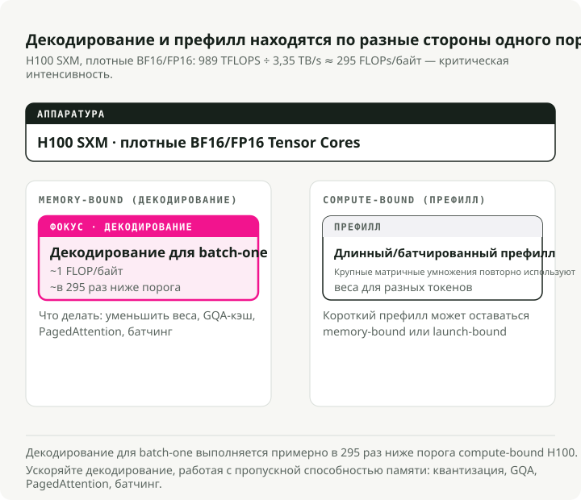
Две фазы inference LLM находятся по разные стороны этого порога:
- Decode — memory-bound. Генерация токенов по одному означает загрузку всей многогигабайтной матрицы весов из памяти для умножения на один новый токен. В 16-битной точности (2 байта на параметр) это ровно 1 FLOP/byte, почти в 300 раз ниже порога H100. Вычислительные блоки простаивают более 99% времени, ожидая память.
- Prefill — compute-bound. Обработка входного prompt загружает веса один раз, но умножает их сразу на сотни или тысячи токенов. Интенсивность поднимается намного выше 295 и насыщает вычислительные блоки.
Поэтому, чтобы ускорить decode, нужно работать с пропускной способностью памяти: уменьшать веса с помощью quantization, снижать накладные расходы памяти KV через GQA и PagedAttention, а также повышать интенсивность с помощью batching. Чтобы ускорить prefill, нужно работать с сырой вычислительной мощностью: более быстрые GPU, FP8-вычисления.
2. Иерархия памяти GPU
У GPU четыре уровня памяти, расположенные как пирамида: внизу большая, но медленная основная память (HBM), наверху — крошечные, но очень быстрые регистры. Основной bottleneck — перемещение данных вверх и вниз по этой пирамиде. Самое тяжелое узкое место находится между HBM и SRAM, где SRAM примерно в 10 раз быстрее.
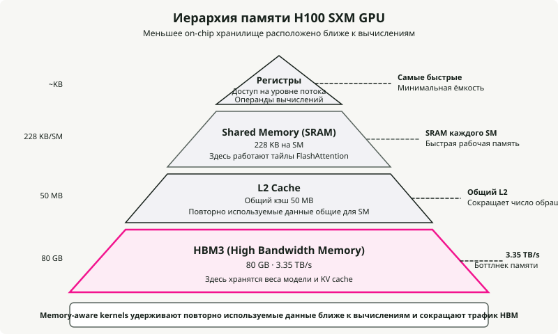
От самой быстрой к самой медленной на H100:
- Registers — самая быстрая память, напрямую привязанная к вычислительным потокам. Именно здесь реально выполняется математика; данные должны быть загружены сюда, чтобы Tensor Cores могли их использовать.
- SRAM (Shared Memory) — рабочая память с пропускной способностью примерно 33 TB/s.
- L2 Cache — промежуточный слой (50 MB) с пропускной способностью около 12 TB/s. Он работает как буфер: когда нескольким SM нужны одни и те же веса, им не приходится всем обращаться в HBM.
- HBM3 — основная память 80 GB, где хранятся веса модели и KV cache, с пропускной способностью ~3.35 TB/s.
Большинство программных трюков из этого руководства (FlashAttention, kernel fusion, PagedAttention) существуют для того, чтобы как можно дольше удерживать данные в SRAM и избегать возврата в HBM, который в 10 раз медленнее.
3. Глоссарий по GPU-железу
Термины ниже встречаются по всему остальному руководству.
HBM (High Bandwidth Memory) — стековая DRAM-память, соединенная через through-silicon vias (TSV), размещенная в одном корпусе рядом с кристаллом GPU. Поколения: HBM2e (A100, 2 TB/s), HBM3 (H100, 3.35 TB/s), HBM3e (H200/B200, 4.8–8 TB/s). Почему это важно для LLM: decode ограничен bandwidth памяти, поэтому bandwidth HBM напрямую определяет TPOT.
GDDR (Graphics DDR) — традиционная графическая память (GDDR6, GDDR6X), используемая в потребительских GPU (RTX 4090, L40S). У нее ниже bandwidth, чем у HBM, но ниже цена за GB. GDDR6X на RTX 4090 дает ~1 TB/s против 3.35 TB/s HBM3 у H100.
SM (Streaming Multiprocessor) — базовый вычислительный блок GPU NVIDIA. Каждый SM содержит CUDA cores, Tensor Cores, shared memory (SRAM) и warp scheduler. У H100 132 SM; у A100 — 108.
Tensor Cores — специализированные блоки matrix-multiply-accumulate внутри каждого SM. Они ускоряют mixed-precision matmul-операции (FP16, BF16, FP8, INT8), которые доминируют в вычислениях transformer. Tensor Cores у H100 дают 989 TFLOPS в TF32 против ~67 TFLOPS только на CUDA cores.
CUDA Cores — универсальные floating-point и integer-устройства. Они обрабатывают поэлементные операции, функции активации и работу вне matmul. Tensor Cores делают основную тяжелую работу для LLM; CUDA cores — все остальное.
Warp — группа из 32 потоков, исполняющихся синхронно на одном SM. Минимальная единица планирования на GPU NVIDIA. Warp specialization назначает разным warp разные задачи (загрузка данных vs вычисления) для конвейеризации.
NVLink — высокоскоростной interconnect между GPU внутри одного узла. NVLink 4.0 (H100) обеспечивает 900 GB/s bidirectional; NVLink 5.0 (B200) достигает 1.8 TB/s. Критически важен для tensor parallelism, где GPU должны обмениваться активациями на каждом слое.
InfiniBand — высокоскоростная сетевая fabric для межузловой связи GPU. NVIDIA ConnectX-7 обеспечивает 400 Gb/s на порт. Используется для pipeline parallelism и распределенного обучения между узлами.
RDMA (Remote Direct Memory Access) — позволяет одному GPU читать/писать память другой машины без участия CPU, минимизируя latency. GPUDirect RDMA дает прямые GPU-to-GPU-передачи между узлами. Используется в disaggregated serving для передачи KV cache.
NVMe (Non-Volatile Memory Express) — высокоскоростной SSD-интерфейс, используемый для offloading KV cache и offloading параметров в ZeRO-Infinity, когда памяти GPU/CPU недостаточно. Последовательная скорость чтения 5–7 GB/s на диск (PCIe Gen 4), у новых Gen 5-дисков — 10–14 GB/s.
TFLOPS / PFLOPS — тера/пета floating-point operations per second. 1 TFLOPS = 10¹² FLOPS. Стандартная единица измерения вычислительной производительности GPU. H100 дает 989 TFLOPS (TF32); FlashAttention-3 достигает ~1.2 PFLOPS в FP8.
Часть II — Основы inference
Inference — это та часть системы, которую реально ощущают пользователи. Latency, KV cache, двухфазная модель исполнения, attention и quantization вместе определяют, насколько быстро, дешево и надежно можно обслуживать запросы.
4. Latency: TTFT, TPOT и перцентили
Time to First Token (TTFT) — это задержка от отправки запроса до первого выходного токена. Она определяется фазой prefill: модель должна обработать весь prompt, прежде чем начать что-либо генерировать, поэтому более длинные prompt означают более высокий TTFT. Production-цели варьируются от <100 ms для code completion до <500 ms для чат-ботов. MLPerf Inference v5.0 задает P99 TTFT на уровне \(\\leq\) 450 ms для Llama 2 70B.
Time Per Output Token (TPOT) — средний интервал между соседними токенами после первого. Он соответствует фазе decode, где каждый шаг ограничен bandwidth памяти:
Средняя скорость чтения про себя у человека — примерно 250 ms на слово (~5 tokens/s) (Brysbaert, 2019), но системы нацеливаются на значительно более высокие скорости, чтобы пользователю не приходилось ждать появления текста. Порог для «плавного» streaming — примерно 25 ms на токен (~40 tokens/s). MLPerf задает P99 TPOT на уровне \(\\leq\) 40 ms для интерактивных нагрузок.
P50 vs P99 latency важны потому, что медиана скрывает худший пользовательский опыт. P99 — это самые медленные 1% запросов, именно там живут пользовательские жалобы и нарушения SLA. Система с хорошим P50 и плохим P99 имеет проблему batching, preemption или queue depth.
5. Throughput: Tokens Per Second и компромисс с latency
Throughput измеряется в output tokens per second по всем конкурентным запросам. Requests per second — более слабая метрика, потому что ответ на 10 токенов и ответ на 1,000 токенов имеют очень разную стоимость. Типичные числа: Llama 3.1 8B на одном H100 достигает 5,000–11,000 output tokens/s при больших batch size (vLLM Benchmarks, 2024); Llama 3 70B FP8 на 4×H100 находится примерно в том же диапазоне у vLLM, SGLang и TensorRT-LLM.
Компромисс такой: при низкой concurrency каждый запрос получает отличную latency, но GPU недоиспользуется. Увеличение batch size почти линейно повышает throughput, пока не насытится compute, после чего latency начинает резко расти. Goodput — доля запросов, которые укладываются в ваши SLO-цели, — это метрика, которая связывает сырой throughput с реальной удовлетворенностью пользователей.
6. KV Cache: bottleneck, стоящий за большинством остальных bottleneck
Во время autoregressive generation каждый новый токен attends ко всем предыдущим токенам. KV cache хранит проекции Key и Value для каждого токена на каждом слое, чтобы избежать \(O(n^2)\)-пересчета. Без него генерация токена \(n\) требовала бы повторного прогона модели по всем \(n-1\) предыдущим токенам.
KV cache обычно является главным источником pressure на память, потому что растет линейно по длине последовательности, batch size и числу слоев:
где:
- \(L\) = число слоев
- \(h_{kv}\) = число KV-heads
- \(d_h\) = размерность head
- \(s\) = длина последовательности
- \(B\) = batch size
Конкретные примеры для FP16 и batch size 1: Llama 3 8B на 8,192 токенах использует ~1.0 GB KV cache; на 128K токенах — 16 GB. Llama 3 70B на 128K токенах требует ~40 GB для одной последовательности — половину VRAM H100. При production batch size KV cache легко превосходит память под веса модели. Наивные реализации теряют 60–80% выделенной памяти под KV из-за fragmentation — именно эту проблему решает PagedAttention.
Главные оптимизации: GQA (меньше KV-heads), quantization KV cache (FP8/INT8), PagedAttention (выделение блоками с потерями <4%) и offloading KV cache на CPU или NVMe.
7. Prefill vs Decode: две фазы, два bottleneck
Фаза prefill обрабатывает весь входной prompt параллельно и заполняет KV cache. Она compute-bound: большие matrix multiplication полностью загружают Tensor Cores, и именно это определяет TTFT. Фаза decode генерирует по одному токену за шаг, при этом на каждом шаге считывает полные веса модели и KV cache из HBM, чтобы выдать один токен. Она memory-bandwidth-bound: вычислительные блоки в основном простаивают в ожидании данных, и именно это определяет TPOT.
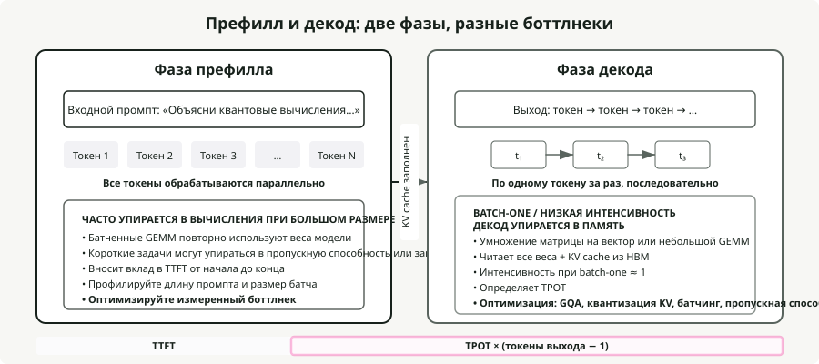
Chunked prefill делит prompt на куски фиксированного размера (например, по 512 токенов), вместо того чтобы обрабатывать его целиком. Длинный prefill больше не блокирует текущие decode-запросы, compute-bound и memory-bound работа совместно планируются на одном GPU, а бенчмарки vLLM показывают +50% throughput (Agrawal et al., 2024). Цена — немного более высокий TTFT для нового запроса.
Более новый паттерн, называемый disaggregated serving (введен в Splitwise и DistServe, сейчас используется Perplexity и NVIDIA Dynamo), физически разделяет prefill и decode на разные пулы GPU, каждый из которых оптимизирован под свой bottleneck. KV cache передается между пулами через RDMA.
8. GQA и MQA: уменьшение KV Cache
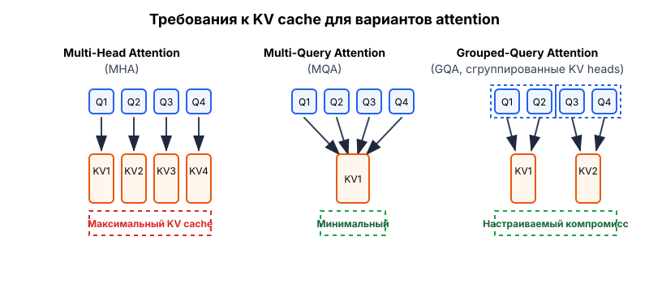
Стандартный Multi-Head Attention (MHA) дает каждой query-head собственную K- и V-head. Multi-Query Attention (MQA) разделяет одну KV-head на все query-heads — это экстремальное уменьшение. Grouped-Query Attention (GQA) — практический компромисс посередине: группы query-heads делят одну KV-head.
Llama 3 70B использует 64 query-heads, но только 8 KV-heads, что дает 8x уменьшение KV cache относительно MHA. Llama 3.1 405B доводит это до 128 query-heads с 8 KV-heads, то есть 16x уменьшение (Meta, 2024). GQA сохраняет качество на уровне MHA (в пределах ~1% на бенчмарках), одновременно приближаясь по скорости к MQA (Ainslie et al., 2023). Меньший KV cache означает более крупные batch size, более высокий throughput и меньшую decode-latency на токен.
9. Quantization: обмен битов на скорость и память
Quantization снижает точность весов модели и/или активаций. Базовые компромиссы:
| Формат | Биты | Память (модель 7B) | Влияние на качество |
|---|---|---|---|
| FP16/BF16 | 16 | ~14 GB | Базовый уровень |
| FP8 | 8 | ~7 GB | Практически без потерь на Hopper (H100) |
| INT8 | 8 | ~7 GB | Падение на 1-3% при настройке |
| INT4 | 4 | ~3.5 GB | Стабильно для 70B+, рискованно для малых моделей |
AWQ (Activation-Aware Weight Quantization) находит <1% значимых весов по величинам активаций и применяет per-channel scaling, чтобы их защитить. Ему нужно всего 128–1,024 calibration-токенов, и он получил награду MLSys 2024 Best Paper Award. GPTQ использует информацию второго порядка из Hessian для поуровневой quantization, что лучше на coding-бенчмарках, но требует больше calibration-данных. bitsandbytes (библиотека Tim Dettmers) квантирует модель на лету во время загрузки без preprocessing-стоимости; ее формат NF4 лежит в основе QLoRA fine-tuning. FP8 на H100/H200 становится production-дефолтом: почти без потерь при 2x снижении памяти.
Стоит отдельно отметить: kernel часто важнее, чем сам алгоритм quantization. Одни и те же quantized weights, обслуживаемые разными kernels, могут показывать 2.6x разницу в throughput исключительно из-за того, насколько хорошо они используют GPU (Раздел 10).
Часть III — Оптимизации inference
Этот раздел о программных техниках, которые превращают работающую inference-систему в быструю. Каждая из них бьет в конкретный bottleneck: FlashAttention использует разрыв SRAM-HBM, PagedAttention убирает fragmentation KV cache, continuous batching держит GPU занятым.
10. CUDA Kernels и Kernel Fusion
CUDA kernel — это функция для GPU, которая исполняется параллельно на тысячах потоков. Когда CPU вызывает kernel, GPU распределяет работу по своим SMs: каждый SM исполняет несколько warp по 32 потока, а каждый поток обрабатывает свою часть данных. Любая операция в LLM inference, от matrix multiplication до token sampling, в конечном счете сводится к запуску kernel. Один forward pass через модель 70B запускает от сотен до тысяч kernels, и разница между наивным и оптимизированным kernel может решить, уложится ли система в latency SLO.
Основные категории kernels в LLM serving:
- GEMM kernels для matrix multiplication, доминирующие и в prefill, и в decode по compute.
- Attention kernels вроде FlashAttention, которые тайлят вычисления так, чтобы оставаться в SRAM, а не вытеснять данные в HBM.
- Fused kernels, объединяющие несколько операций (например, add + layer norm или QKV projection) в один запуск, чтобы избежать промежуточных походов в HBM.
- Sampling kernels, которые превращают logits в token ID через top-k, top-p или temperature sampling.
Качество kernel часто важнее, чем алгоритм quantization. Те же INT4-квантованные веса, обслуживаемые через Marlin (оптимизированный FP16xINT4 kernel), дают 712 tokens/s против 276 tokens/s у обычного GPTQ — 2.6x разница в throughput только за счет лучшей загрузки GPU. Marlin достигает этого за счет асинхронного выборки памяти и очередей в shared memory, которые держат Tensor Cores загруженными вместо ожидания HBM. Triton снижает порог входа для написания custom kernels, предоставляя GPU-программирование через Python, а не через raw CUDA C++, поэтому оптимизация на уровне kernels становится доступной ML-инженерам, а не только GPU-специалистам. Большинство оптимизаций дальше в этом разделе (FlashAttention, fused kernels, PagedAttention) по сути являются либо лучшими kernels, либо более умными способами оркестрации их запусков.
Kernel fusion объединяет несколько последовательных операций в один GPU-kernel и пропускает промежуточные записи в HBM. Типичные fusion-паттерны: QKV projection (один matmul вместо трех), attention + softmax (собственно FlashAttention), add + RMSNorm (FlashNorm) и активация SwiGLU (DeepFusionKernel). Triton делает практичным написание таких fused kernels на Python. Без fusion модель 70B имеет тысячи kernel launch на токен при ~30% загрузки GPU. С fusion слои сводятся к 1–2 оптимизированным kernels при 80–90% utilization.
11. FlashAttention: тайлинг attention для жизни в SRAM
Стандартный attention материализует полную матрицу attention размера \(N \\times N\) в HBM, что требует памяти \(O(N^2)\) и создает большой memory traffic. Идея FlashAttention — вообще никогда не материализовать эту матрицу. Он разбивает матрицы Q, K, V на блоки, помещающиеся в SRAM, вычисляет частичный attention внутри каждого tile и объединяет результаты с помощью online softmax (инкрементально отслеживая текущий максимум и сумму по блокам). Память падает с \(O(N^2)\) до \(O(N)\), а чтения из HBM уменьшаются на порядок.
Каждая версия нацелена на bottleneck своего поколения GPU:
- FlashAttention v1 (A100, 2022) доказал, что идея с tile + online softmax работает. Дал ускорение 2–4x относительно стандартного attention, но только 25–40% загрузки GPU, потому что планирование kernels оставляло многие SM без работы.
- FlashAttention v2 (A100, 2023) переработал parallelism, распределяя его по dimension sequence, а не по batch и heads. Достиг 50–73% utilization на A100, примерно 2x быстрее, чем v1.
- FlashAttention v3 (H100 Hopper, 2024) добавил warp specialization (отдельные warp для перемещения данных и для математики) и GEMM-softmax pipelining, чтобы перекрывать загрузку памяти вычислениями. 75–85% utilization на H100 и до ~1.2 PFLOPS в FP8. Spotlight на NeurIPS 2024.
- FlashAttention v4 (B200 Blackwell, 2026) решает новый bottleneck: на Blackwell throughput Tensor Cores растет настолько быстро, что limiter'ом становятся не-matmul-операции (экспоненты softmax, rescaling). FA4 программно эмулирует экспоненту с помощью polynomial approximations на FMA units, использует conditional rescaling для снижения overhead и хранит intermediate-значения в выделенной tensor memory (TMEM) Blackwell вместо регистров. Результат: 1,605 TFLOPS/s на B200 в BF16, в 1.3x быстрее, чем cuDNN 9.13, и в 2.7x быстрее, чем Triton.
Каждое поколение упиралось в разную аппаратную стену, и каждая версия FlashAttention перерабатывалась с уровня kernel именно под этот bottleneck.
12. FlashDecoding: распараллеливание bottleneck decode
Стандартный FlashAttention держит GPU занятым, разбивая работу по batch size и query length. Во время decode модель генерирует ровно 1 токен за раз (query length = 1). Если произведение batch size на число attention-heads меньше общего числа SM у GPU (108 у A100), большая часть GPU простаивает, пока несколько блоков последовательно перемалывают историю токенов.
FlashDecoding решает это, добавляя новое измерение parallelism: саму длину KV-последовательности. Он режет KV cache на более мелкие чанки и распределяет их по всем иначе простаивающим процессорам GPU для параллельной оценки, а затем объединяет их частичные вычисления через reduction log-sum-exp.
Результат — до 8x end-to-end ускорения decode на длинных последовательностях (64K context) и почти постоянное время decode на токен. Генерация токена 60,000 остается почти столь же быстрой, как генерация токена 100.
13. Continuous Batching vs Static Batching
Static batching ждет, пока каждая последовательность в batch завершится, прежде чем начать следующую, поэтому короткие последовательности тратят GPU-циклы впустую, простаивая после достижения end-of-sequence. Continuous batching (введен в Orca paper, OSDI 2022) работает с granularity уровня итерации: на каждом шаге decode завершенные последовательности удаляются, а новые вставляются.
Числа здесь большие. Бенчмарки Anyscale на OPT-13B показывают: оптимизированный static batching дает 4x к наивному, continuous batching — 8x, а vLLM с continuous batching + PagedAttention — 23x к наивному (Anyscale, 2023). Подвох в том, что continuous batching усиливает fragmentation KV cache. Больше конкурентных последовательностей означает больше разбросанных выделений памяти, а это ровно та проблема, для которой был создан PagedAttention.
14. PagedAttention: виртуальная память для KV Cache
vLLM's PagedAttention переносит идею виртуальной памяти ОС на управление KV cache. KV cache делится на блоки фиксированного размера (обычно 16 токенов), блоки выделяются по требованию по мере генерации токенов, а логические (последовательные) позиции отображаются в физические (разбросанные) адреса памяти через block tables. Несколько запросов с общим префиксом (system prompts, beam search) могут ссылаться на одни и те же физические блоки.
Ранние системы теряли 60–80% памяти KV cache из-за fragmentation и pre-allocation. PagedAttention снижает это до <4%, что позволяет поднять throughput в 2–4 раза при той же latency и до 24x относительно HuggingFace Transformers (vLLM Blog, 2023).
15. Speculative Decoding: несколько токенов за один forward pass
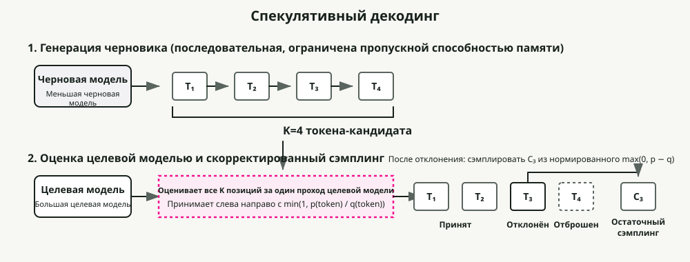
Небольшая draft model генерирует \(K\) candidate-токенов, затем большая target model проверяет все \(K\) токенов за один forward pass. Корректные токены принимаются; первый неверный отклоняется. Качество вывода математически идентично запуску только target model, так что это ускорение без потерь.
Это работает потому, что decode у LLM ограничен bandwidth памяти: проверка \(K\) токенов стоит примерно столько же, сколько генерация 1, потому что в обоих случаях все веса модели загружаются один раз. Типичное ускорение — 1.5x до 3x, а методы вроде EAGLE-3 доходят до 6.5x. Варианты включают Medusa (дополнительные prediction heads, без отдельной модели), prompt lookup decoding (сопоставление n-gram с входом, практически бесплатно) и EAGLE (экстраполяция на уровне признаков).
Подвох — concurrency: при больших batch size дополнительная вычислительная стоимость draft и verification может вызвать замедление в 1.4–1.8x. Speculative decoding полезнее всего при малых batch size и задачах, где acceptance draft высока (summarization, QA).
16. Prefix Caching и повторное использование KV Cache
Вместо того чтобы выбрасывать KV cache после завершения запроса, prefix caching сохраняет его для повторного использования новыми запросами с теми же prefix-токенами. Это уменьшает лишний prefill для system prompts, few-shot examples, RAG-контекста и истории многотурового диалога.
Automatic Prefix Caching в vLLM хеширует каждый KV-блок и использует глобальную hash table для lookup, достигая cache hit rate 87%+ на хорошо структурированных prompt. RadixAttention в SGLang поддерживает radix tree всех закэшированных KV tensor'ов с granularity до токена и автоматически находит возможности кэширования, достигая до 5x улучшения throughput.
17. Streaming на практике
Streaming отправляет токены клиенту по мере генерации, вместо ожидания полного ответа. Большинство serving frameworks предоставляют его через Server-Sent Events: клиент открывает долгоживущее HTTP-соединение, а сервер отправляет каждый токен (или небольшой batch токенов) как событие data:. TTFT определяет, когда пользователь впервые видит вывод; TPOT — насколько плавно это ощущается. Цель: TPOT < 25 ms для плавного streaming (~40 tokens/s).
На стороне клиента streaming заставляет принимать решения о buffering. Рендеринг токен за токеном может вызывать визуальный jitter, особенно для markdown или code blocks, которым нужен многотокенный контекст для корректного форматирования. Типичные паттерны: буферизация по словам (накапливать токены до границы whitespace), буферизация по строкам (ждать newline перед рендерингом) и адаптивная буферизация (рендерить сразу прозу, буферизовать кодовые блоки). Параметр stream_options: {"include_usage": true} в OpenAI-compatible API возвращает число токенов в финальном SSE-событии, что позволяет точно учитывать стоимость для streamed-ответов.
Chunked prefill — именно то, что позволяет streaming выдерживать нагрузку. Без него один длинный prefill может остановить доставку токенов всем остальным конкурентным пользователям.
Часть IV — Архитектура модели
Как устроены LLM: transformer block, tokenization, работа с context и архитектурные варианты, ставшие стандартом. Это лежит в основе и inference, и обучения.
18. Базовые элементы архитектуры Transformer
Современный decoder-only transformer (GPT, Llama) — это стек одинаковых слоев, каждый из которых состоит из двух sub-block: attention и feed-forward. Каждый sub-block обернут residual connection и normalization. Ключевые компоненты:
Multi-Head Attention — механизм, который позволяет каждому токену смотреть на все остальные токены и решать, что релевантно. Вход проецируется в три матрицы: Queries (что я ищу?), Keys (что я содержу?), Values (какую информацию я несу?). Далее attention scores вычисляются как:
Скалярное произведение \(QK^T\) измеряет сходство между каждой парой токенов. Деление на \(\\sqrt{d_k}\) не дает произведениям расти слишком сильно (что загнало бы softmax в области с исчезающими градиентами). Softmax переводит score в вероятности, а умножение на \(V\) дает взвешенную комбинацию value-векторов. Запуск этого процесса параллельно по нескольким heads позволяет модели одновременно учитывать разные отношения (одна head для синтаксиса, другая для coreference и т. д.).
Feed-Forward Network (FFN) — после того как attention определил, какие токены релевантны, FFN решает, что делать с этой информацией. Современные LLM используют SwiGLU вместо исходного двухматричного ReLU FFN:
SwiGLU использует три матрицы весов вместо двух и гладкую активацию Swish вместо ReLU. Это добавляет около 50% параметров к FFN, но достаточно улучшает качество, поэтому его приняли все основные семейства моделей (Llama, Mistral, Qwen, Gemma). На FFN обычно приходится около двух третей всех параметров модели.
Residual Connections — каждый sub-block добавляет свой выход обратно ко входу: \(\\text{Output} = \\text{Input} + \\text{Sublayer}(\\text{Input})\). Без этого skip connection градиенты исчезают при backpropagation через 80–128 слоев. Residual создает путь, по которому информация и градиенты могут напрямую течь от ранних слоев к поздним.
RMSNorm — фактически заменил LayerNorm почти во всех современных LLM. LayerNorm нормализует через re-centering (вычитание среднего) и re-scaling (деление на стандартное отклонение). RMSNorm пропускает вычитание среднего и делает только re-scaling, что вдвое сокращает обучаемые параметры и работает на 7–64% быстрее без потери качества. Расположение pre-norm (normalization перед attention/FFN, а не после) теперь является стандартом, потому что дает более стабильные градиенты без аккуратного learning rate warmup.
Оценка числа параметров для decoder-only модели:
где \(V\) = размер словаря, \(d\) = скрытая размерность, \(L\) = число слоев. Член \(V \\times d\) — это embedding matrix; \(12 \\times d^2\) на слой покрывает attention projections (Q, K, V, output = \(4d^2\)) и SwiGLU FFN (\(8d^2\) при типичном промежуточном размере \(\\frac{8}{3}d\)). Для Llama 3 8B (\(V\)=128,256, \(d\)=4,096, \(L\)=32): \(128{,}256 \\times 4{,}096 + 12 \\times 32 \\times 4{,}096^2 \\approx 7.0B + 0.5B \\approx 7.5B\) параметров (фактически: 8.03B с tied embeddings и поправками на GQA).
19. Почему доминируют decoder-only архитектуры
Оригинальный Transformer (2017) содержал и encoder, и decoder. С тех пор поле разделилось на три архитектурных семейства, и одно из них стало дефолтом для generative AI.
Encoder-only модели (BERT, RoBERTa) используют bidirectional attention: каждый токен attends ко всем остальным токенам в обе стороны. Это дает богатые представления для задач понимания (classification, NER, semantic similarity), но не позволяет autoregressive text generation. Encoder-only модели по-прежнему доминируют как backbone для embedding models, rerankers и легких классификаторов (например, BERT-based routers в RouteLLM).
Encoder-decoder модели (T5, BART, оригинальный Transformer) разделяют понимание и генерацию. Encoder обрабатывает весь вход bidirectional attention, затем decoder генерирует выход autoregressively, attending к представлениям encoder через cross-attention. Это естественно подходило для sequence-to-sequence задач, вроде перевода, где вход и выход — принципиально разные последовательности. Google's T5 показал, что любую NLP-задачу можно формулировать как text-to-text, и encoder-decoder-модели до сих пор лежат в основе некоторых специализированных систем (Whisper для speech recognition, FLAN-T5 для instruction following).
Decoder-only модели (GPT, Llama, Mistral, Gemini) используют causal (однонаправленный) attention: каждый токен attends только к предыдущим токенам. Они формулируют все как next-token prediction: «input» — это начало последовательности, а «output» — ее продолжение. Четыре причины, почему эта архитектура победила:
-
Эффективность KV cache. KV cache предыдущих токенов остается валидным при генерации новых токенов, поэтому его не нужно выбрасывать или пересчитывать. Encoder-decoder модели должны поддерживать два отдельных attention cache (self-attention плюс cross-attention поверх encoder output), что добавляет memory overhead и архитектурную сложность.
-
Простота обучения. Целевая функция обучения — обычное next-token prediction на сыром тексте. Не нужны парные input-output данные (как для translation) или masked-token reconstruction (как в BERT). Можно обучаться практически на любом тексте из интернета, книг и кода без специального preprocessing, а это огромное преимущество при масштабировании данных до триллионов токенов.
-
Простота архитектуры. Один модуль делает все: один и тот же transformer block, повторенный \(L\) раз. Нет encoder-decoder cross-attention layers, нет отдельного encoder stack. Это делает стратегии parallelism более прямолинейными (Раздел 33) и уменьшает engineering surface для оптимизаций. FlashAttention, quantization и speculative decoding нужно нацеливать только на один attention pattern.
-
In-context learning. Decoder-only модели естественно хорошо справляются с few-shot learning, потому что примеры, инструкции и сам запрос — это просто токены в одной и той же последовательности. Модель не различает «input» и «output»; она предсказывает следующий токен, имея все предыдущие. GPT-3 первым продемонстрировал это в масштабе, и именно это сделало decoder-only модели сильным кандидатом на роль универсального assistant.
20. Mixture of Experts
MoE заменяет плотный FFN в каждом transformer layer на несколько меньших expert FFN плюс легковесный gating router. Router вычисляет score для каждого expert'а (обычно softmax по обучаемым linear projections) и выбирает top-\(k\) expert'ов на токен. Вычисляют только активированные expert'ы, поэтому модель может иметь огромную общую емкость при низкой стоимости на токен. Это sparse conditional computation: общее число параметров определяет, что модель может представить, а активные параметры — сколько стоит ее запуск.
| Модель | Всего параметров | Активные параметры | Experts (маршрутизируемые + shared) | Top-\(k\) |
|---|---|---|---|---|
| Mixtral 8x7B | 47B | ~13B | 8 + 0 | 2 |
| DeepSeek-V3 | 671B | 37B | 256 + 1 | 8 |
Shared expert в DeepSeek-V3 всегда активируется для каждого токена. Он дает базовое представление, поверх которого routed experts могут специализироваться.
У обучения MoE есть собственные болевые точки. Load balancing: токены скапливаются на нескольких популярных expert'ах, а остальные недообучаются. Expert collapse: expert'ы сходятся к одинаковым представлениям, что обесценивает саму идею их множества. И communication overhead для Expert Parallelism. Традиционные MoE-модели добавляют auxiliary loss, штрафующий небалансный routing, но этот loss конкурирует с основной целью обучения и ухудшает качество. DeepSeek-V3 решил это через auxiliary-loss-free bias terms: у каждого expert'а есть bias, добавляемый к его gating score и динамически регулируемый вне backpropagation — уменьшается для перегруженных expert'ов и увеличивается для недогруженных. Результат — сбалансированный routing без компромисса по качеству.
21. Tokenization: BPE, SentencePiece и tiktoken
LLM не видят текст. Они видят последовательности целочисленных token ID. Tokenizer разбивает сырой текст на токены (subword-фрагменты) и сопоставляет каждому ID. Выбор tokenizer влияет на качество модели, скорость inference и мульти-языковую справедливость.
Byte Pair Encoding (BPE) — самый распространенный алгоритм. Он итеративно объединяет самые частые соседние пары в обучающем корпусе. Упрощенный пример:
- Начинаем со словаря на уровне символов:
[l, o, w, e, r, _] - Самая частая пара —
(l, o)→ объединяем вlo→ словарь:[l, o, w, e, r, _, lo] - Следующая самая частая пара —
(lo, w)→ объединяем вlow→ словарь получаетlow - Продолжаем, пока словарь не достигнет целевого размера (например, 128K токенов)
Частые слова вроде "the" становятся одиночными токенами, а редкие вроде "defenestration" разбиваются на subword-фрагменты вроде ["def", "en", "est", "ration"]. Компромисс идет между размером словаря и длиной последовательности.
Три реализации tokenizer покрывают большую часть production-задач:
- SentencePiece рассматривает вход как сырой поток байтов без language-specific preprocessing (без pre-tokenization по пробелам или пунктуации), что делает его language-agnostic и особенно важным для нелатинских скриптов. Поддерживает и BPE, и unigram. Используется в Llama 1/2, T5 и Mistral.
- tiktoken — tokenizer OpenAI на Rust, использующий byte-level BPE. Его скомпилированное Rust-ядро работает в 3–6x быстрее, чем Python-альтернативы. Llama 3 перешла с SentencePiece на алгоритм tiktoken.
- HuggingFace Tokenizers — библиотека на Rust с поддержкой BPE, WordPiece и Unigram. Это фактический стандарт для дистрибуции open-source моделей.
Размеры словарей стабильно росли, и это сильно влияет на эффективность:
| Модель | Размер словаря | English Fertility | Почему это важно |
|---|---|---|---|
| GPT-2 | 50,257 | ~1.3 tokens/word | Исходный baseline BPE |
| Llama 2 | 32,000 | ~1.4 tokens/word | Меньший словарь, более длинные последовательности |
| GPT-4 | 100,256 | ~1.1 tokens/word | Лучшая компрессия, меньше токенов на запрос |
| Llama 3 | 128,256 | ~1.0 tokens/word | В 4 раза больше, чем у Llama 2, большой выигрыш для multilingual |
| GPT-4o | 200,000 | ~1.0 tokens/word | Самый большой production-словарь |
Fertility (токенов на слово) измеряет эффективность компрессии. Меньше — лучше: меньше токенов означает более короткие последовательности, меньшую стоимость и больше контента в context window. Для английского обычно получается ~1.0–1.3 tokens/word, но для нелатинских письменностей (китайский, японский, корейский, арабский) при англоцентричных словарях показатель может быть в 2–4 раза выше. Один и тот же контент обходится в 2–4 раза дороже в токенах для неанглоязычных пользователей — это устойчивая проблема equity, которую даже большие и более сбалансированные словари решают лишь частично.
22. Context Windows и positional encodings
Context window — это максимальное число токенов, которое модель может обработать за один forward pass. Оно заметно выросло:
| Модель | Context Window | Год |
|---|---|---|
| Original Transformer | 512 | 2017 |
| GPT-4 Turbo | 128K | 2023 |
| Claude 3.5 | 200K | 2024 |
| Gemini 1.5 Pro | 1M+ | 2024 |
| Grok 4 Fast | 2M | 2025 |
Здесь есть базовая проблема: механизм attention воспринимает вход как множество, а не как последовательность. У него нет встроенного понятия порядка слов. Без positional information фразы "the cat sat on the mat" и "the mat sat on the cat" дали бы одинаковые представления. Positional encodings внедряют информацию о порядке, чтобы модель знала, где расположен каждый токен.
Доминируют три подхода:
-
RoPE (Rotary Position Embeddings) кодирует позицию токена, поворачивая его query- и key-векторы на угол, пропорциональный позиции. Близкие токены получают похожие повороты, поэтому их dot product (attention score) остается высоким. Далекие токены получают сильно разные повороты, что кодирует относительную дистанцию. RoPE — стандарт почти для всех современных open LLM (Llama, Mistral, Qwen), потому что хорошо работает с относительными позициями и дешев вычислительно.
-
ALiBi (Attention with Linear Biases) не изменяет embeddings, а добавляет штраф прямо в attention scores: чем дальше два токена друг от друга, тем больше отрицательный bias. Нет обучаемых параметров, нет дополнительного compute. Позволяет некоторую экстраполяцию за пределы длины обучения, но заметно деградирует на 2x+ от training context.
-
YaRN (Yet another RoPE extensioN) — текущий лучший вариант для растягивания context window модели за пределы того, на чем она обучалась. Он разбивает частотные измерения RoPE на три категории (высокие частоты: не масштабировать; низкие: масштабировать линейно; средние: интерполировать) и применяет разный scaling к каждой. Результат: расширение context с в 10 раз меньшим числом fine-tuning-токенов и в 2.5 раза меньшим числом training steps, чем у наивной position interpolation.
Часть V — Обучение и alignment
Именно на этапе обучения строятся способности модели. Этот раздел охватывает pretraining, эффективный fine-tuning (LoRA, mixed precision), scaling laws и методы alignment.
23. Pretraining, Fine-Tuning и Alignment
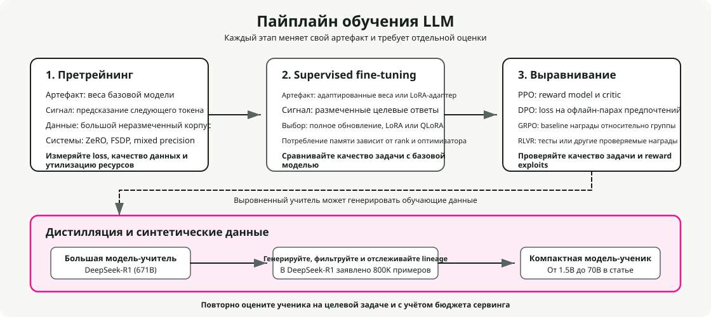
Pretraining — это self-supervised next-token prediction на триллионах токенов. Он формирует общее языковое понимание и стоит от \\(500K до \\\)100M+: Llama 3 405B использовала \(3.8 \\times 10^{25}\) FLOPs. Supervised fine-tuning (SFT) адаптирует pretrained-модель под конкретные задачи на размеченных данных и обычно стоит от сотен до низких тысяч долларов на одном GPU. RLHF / RLAIF обучает субъективным качествам вроде helpfulness через preference learning: собираются человеческие сравнения, обучается reward model, затем policy дообучается с RL (обычно PPO или DPO). В RLAIF человеческие аннотаторы заменяются AI feedback (Constitutional AI).
Compute различается примерно на шесть порядков: pretraining на уровне \(10^{24}\)–\(10^{26}\) FLOPs, SFT — \(10^{18}\)–\(10^{21}\), RLHF близок к SFT, но требует 4 копии модели в памяти для PPO. Полный decision framework по fine-tuning (когда делать fine-tune, а когда использовать RAG или prompt engineering) я разбирал в LLM Fine-Tuning Guide.
24. LoRA и QLoRA: parameter-efficient fine-tuning
LoRA замораживает pretrained-веса и вставляет обучаемые низкоранговые матрицы \(A\) (\(r \\times k\)) и \(B\) (\(d \\times r\)), так что обновленный вес равен \(W_0 + BA\). Ключевой инсайт: обновления весов при fine-tuning имеют низкий внутренний ранг. Это сокращает число обучаемых параметров в 10,000 раз (GPT-3 175B падает с 175B до ~18M) и уменьшает потребление GPU-памяти примерно в 3 раза. Типичные ранги: \(r\)=8–16 для простых задач, \(r\)=64–128 для сложных сценариев. LoRA adapters можно слить в модель после обучения без overhead на inference.
QLoRA загружает базовую модель в 4-битной NF4-quantization, одновременно обучая LoRA adapters в BF16. Формат NormalFloat4 размещает больше уровней quantization около нуля, где плотность весов максимальна. QLoRA позволяет fine-tune модель 65B на одном 48GB GPU с качеством, едва отличимым от полного 16-битного fine-tuning. Компромисс — обучение на 39% дольше при 33% экономии GPU-памяти относительно обычной LoRA.
25. Mixed Precision Training
Любой формат floating-point распределяет свои биты между тремя полями: sign (всегда 1 бит), exponent (задает динамический диапазон) и mantissa (задает точность). Больше битов exponent означает более широкий диапазон представимых величин; больше битов mantissa — более тонкое различение близких значений. Integer-форматы вообще не имеют exponent и представляют только равномерно расположенные целые числа в фиксированном диапазоне.
| Формат | Биты | Layout (S / E / M) | Диапазон | Точность | Лучше всего подходит для |
|---|---|---|---|---|---|
| FP32 | 32 | 1 / 8 / 23 | \(\\pm 3.4 \\times 10^{38}\) | ~7 десятичных знаков | Master weights, optimizer states (Adam momentum & variance) |
| BF16 | 16 | 1 / 8 / 7 | \(\\pm 3.4 \\times 10^{38}\) | ~2 десятичных знака | Предпочтительный training format — тот же диапазон, что у FP32, loss scaling не нужен |
| FP16 | 16 | 1 / 5 / 10 | \(\\pm 65{,}504\) | ~3 десятичных знака | Обучение с loss scaling (старые GPU); inference на pre-Hopper hardware |
| FP8 E4M3 | 8 | 1 / 4 / 3 | \(\\pm 448\) | ~1 десятичный знак | Forward pass на Hopper (H100) — больше точности для weights и activations |
| FP8 E5M2 | 8 | 1 / 5 / 2 | \(\\pm 57{,}344\) | ~0.6 десятичного знака | Backward pass на Hopper — более широкий диапазон для gradients |
| INT8 | 8 | fixed-point | \(-128\) to \(127\) | Точные целые | Post-training weight quantization для inference (W8A8); quantization KV cache |
| INT4 | 4 | fixed-point | \(-8\) to \(7\) | Точные целые | Агрессивная weight-only quantization (AWQ, GPTQ) для inference на памяти-ограниченном железе |
BF16 имеет тот же диапазон, что и FP32, потому что диапазон задается полем exponent, а BF16 сохраняет все 8 exponent-битов FP32. Он жертвует битами mantissa (7 против 23), обменивая точность на 2x сокращение памяти и при этом избегая overflow и underflow, которые мучают FP16-training. У FP16 только 5 exponent-битов, что ограничивает диапазон примерно 65K. Градиенты регулярно превосходят это значение, поэтому FP16-training требует loss scaling: умножить loss на большую константу перед backprop, потом разделить градиенты обратно. BF16 делает loss scaling ненужным.
Integer-форматы отсутствуют в training, потому что integer-quantization не имеет динамического диапазона и не может представлять широкий разброс magnitudes градиентов во время backpropagation. Они хорошо работают для inference, где веса зафиксированы и могут быть отображены в фиксированный диапазон. INT4-quantization (через AWQ или GPTQ) уменьшает модель 7B примерно с 14 GB до 3.5 GB, чего достаточно для запуска на consumer GPU с лишь небольшой потерей качества.
FP8 training на H100 через Transformer Engine использует E4M3 для forward pass (больше бит mantissa, выше точность для activations) и E5M2 для backward pass (больше бит exponent, шире диапазон для gradients), давая до 75% ускорения wall-clock времени на моделях 175B. DeepSeek-V3 обучалась полностью в FP8 mixed precision примерно за $5.6M — это предельная compute-стоимость финального training-run, без учета R&D и инфраструктуры.
26. Gradient Checkpointing
Каждый слой forward pass производит промежуточный выход, называемый activation:
Обычно все activations должны оставаться в памяти, потому что backpropagation использует их для вычисления градиентов. В глубоком transformer сохраненные activations могут занимать больше памяти, чем сами веса модели.
Gradient checkpointing обменивает compute на память: он выбрасывает большинство activations и пересчитывает их на лету во время backprop. Стандартная стратегия (Chen et al., 2016) делит сеть из \(n\) слоев на \(\\sqrt{n}\) равномерно распределенных сегментов и сохраняет только граничную activation каждого сегмента. Эти сохраненные границы и есть «checkpoints». Все промежуточные activations внутри сегмента сразу отбрасываются.
Когда backward pass доходит до слоя внутри сегмента, его activations пересчитываются от ближайшего checkpoint. Это снижает память под activations с \(O(n)\) до \(O(\\sqrt{n})\), что на практике дает снижение на 60–70%, ценой примерно одного дополнительного forward pass (~20–33% больше compute). FlashAttention использует тот же принцип внутри attention, не материализуя полную матрицу attention. В HuggingFace это включается через gradient_checkpointing=True.
27. Стадии DeepSpeed ZeRO
В стандартном data parallelism каждый GPU хранит полную копию весов модели, градиентов и optimizer states. Для Adam каждый параметр занимает 2 байта для FP16-веса + 4 байта для FP32 master weight + 4 байта для momentum + 4 байта для variance + 2 байта для gradient, то есть 16 байт на параметр. Модель с 7.5B параметров требует ~120 GB на каждый GPU, и каждый GPU хранит одно и то же. На 64 GPU это 64 одинаковые копии по 120 GB. Огромный waste.
DeepSpeed ZeRO (Zero Redundancy Optimizer) устраняет это дублирование, шардируя эти компоненты по GPU вместо репликации:
- Stage 1 — partition optimizer states. Каждый GPU хранит только 1/N optimizer states (momentum и variance у Adam, 8 bytes/param). Когда GPU нужно обновить вес, он обновляет только свой фрагмент и рассылает результат. Память падает с ~120 GB до ~31 GB на GPU.
- Stage 2 — также partition gradients. Градиенты (2 bytes/param) больше не all-reduce'ятся на каждый GPU. Каждый GPU получает только нужный ему gradient slice через reduce-scatter. Память падает до ~16 GB на GPU.
- Stage 3 — также partition model weights. Каждый GPU держит только 1/N FP16-весов. Перед forward или backward pass каждого слоя GPU вызывает all-gather, чтобы временно восстановить полные веса слоя из всех других GPU, вычисляет слой и выбрасывает собранные веса. Память падает до ~1.9 GB на GPU.
| Конфиг | Optimizer States | Gradients | Weights | Память на GPU (7.5B) |
|---|---|---|---|---|
| No ZeRO | Replicated | Replicated | Replicated | ~120 GB |
| Stage 1 | Partitioned | Replicated | Replicated | ~31 GB |
| Stage 2 | Partitioned | Partitioned | Replicated | ~16 GB |
| Stage 3 | Partitioned | Partitioned | Partitioned | ~1.9 GB |
Компромисс — communication. Stage 1 добавляет минимальный overhead, Stage 2 заменяет all-reduce на reduce-scatter (примерно та же стоимость), но Stage 3 требует all-gather перед каждым слоем и на forward, и на backward, примерно в 1.5 раза увеличивая объем communication по сравнению со стандартным data parallelism.
ZeRO-Infinity расширяет Stage 3 за счет offloading partitioned states в RAM CPU и даже на NVMe SSD, что позволяет обучать модели с триллионами параметров на ограниченных GPU-кластерах. Цена — сильное падение скорости (NVMe примерно в 500 раз медленнее HBM), поэтому ZeRO-Infinity — это инструмент на случай, когда модель физически не помещается в суммарную память GPU + CPU.
28. FSDP: нативный для PyTorch sharding
Fully Sharded Data Parallel (FSDP) — встроенный ответ PyTorch на DeepSpeed ZeRO-3. Он шардирует параметры, градиенты и optimizer states между GPU, используя ту же базовую идею. Механика для каждого слоя — простой цикл:
- All-gather полных параметров со всех GPU (временно восстанавливаем полный слой).
- Compute forward или backward pass этого слоя.
- Free собранных параметров сразу после этого. Каждый GPU хранит только свой shard.
- Reduce-scatter градиентов, чтобы каждый GPU получил только свой назначенный slice.
Поскольку FSDP нативен для PyTorch, он избегает overhead на стыковку между фреймворками. Это преимущество интеграции делает FSDP до 5x быстрее на итерацию, чем DeepSpeed ZeRO-3, для моделей среднего размера в multi-node setup (результаты зависят от workload), и он нативно работает с debugging tools, profilers и torch.compile в PyTorch.
| Критерий | FSDP (PyTorch) | DeepSpeed ZeRO |
|---|---|---|
| Лучше всего для | Моделей до ~70B, PyTorch-native workflows | Огромных моделей (70B+), экстремальных ограничений по памяти |
| Offloading | CPU offloading | CPU + NVMe offloading (ZeRO-Infinity) |
| Стадии ZeRO | Только Stage 3 (полный sharding) | Stages 1, 2, 3 (гранулярный контроль) |
| Интеграция с фреймворком | Native PyTorch, поддержка torch.compile | Отдельная библиотека, собственная система конфигурации |
| Экосистема | PyTorch-native | Более богатый feature set, больше ручек для настройки |
FSDP2 (2024–2025) — это переписанная версия, которая улучшает интеграцию torch.compile для лучшего kernel fusion, добавляет поддержку FP8 training через TorchAO и упрощает API. И FSDP, и DeepSpeed доступны через HuggingFace Accelerate, что позволяет переключаться между ними одной сменой конфигурации.
29. Scaling Laws и ловушка Chinchilla
Scaling по Chinchilla (DeepMind, 2022) показал, что compute-optimal обучение использует ~20 токенов на параметр, то есть модель 70B должна быть обучена примерно на 1.4T токенов. Точное следование Chinchilla дает модели, слишком дорогие для serving, — это и есть ловушка Chinchilla. Chinchilla-optimal модель 70B дает отличный training loss, но каждый inference-запрос должен загружать и исполнять все 70B параметров. Если меньшая модель, обученная на большем количестве данных, достигает сопоставимого качества, ее serving будет радикально дешевле на миллиардах production-запросов.
Решение — переобучать smaller models на значительно большем количестве данных. Эволюция впечатляет:
| Модель | Параметры | Training Tokens | Tokens/Param | Chinchilla × |
|---|---|---|---|---|
| Chinchilla | 70B | 1.4T | 20:1 | 1× |
| Llama 1 | 65B | 1.4T | 22:1 | 1× |
| Llama 2 | 70B | 2.0T | 29:1 | 1.4× |
| Llama 3 8B | 8B | 15T | 1,875:1 | 94× |
| Qwen3-0.6B | 0.6B | 36T | 60,000:1 | 3,000× |
Если учитывать полный lifetime cost inference на миллиардах запросов, то более долгое обучение smaller models выигрывает с большим запасом. Модель вроде Llama 3 8B требует больше training compute, чем предписывал бы Chinchilla, но стоит в разы дешевле в deployment, а именно inference-cost доминирует в общих расходах. «Chinchilla-optimal» на деле означает «optimal по training compute», а это совсем другая цель, чем «optimal с учетом inference».
30. RLHF, DPO, GRPO и ландшафт alignment
Alignment — это процесс настройки pretrained-модели так, чтобы она следовала инструкциям, отказывалась от вредоносных запросов и выдавала правдивые ответы. Он закрывает разрыв между «умеет предсказывать следующий токен» и «действительно полезна и безопасна». Pretrained base model без alignment спокойно генерирует токсичный контент, уверенно hallucinate'ит или игнорирует ваши инструкции. Методы ниже — основные подходы к закрытию этого разрыва, каждый со своими компромиссами по сложности, требованиям к данным и стабильности обучения.
Классический pipeline RLHF: SFT → сбор human preference pairs → обучение reward model на этих парах → fine-tuning policy через PPO (Proximal Policy Optimization). PPO держит в памяти 4 копии модели одновременно (policy, reference, critic/value model, reward model), чувствителен к hyperparameters и склонен к reward hacking, когда модель эксплуатирует особенности reward model (например, многословные, уверенно звучащие ответы), вместо реального улучшения качества.
DPO (Direct Preference Optimization) полностью пропускает и reward model, и RL-loop и напрямую оптимизирует contrastive loss на preference pairs. Это схлопывает pipeline до одного supervised training step, что намного проще и стабильнее. Компромисс в том, что DPO — offline-метод: он обучается только на фиксированном наборе заранее собранных preferences. Модель не генерирует новых ответов во время обучения и потому не может исследовать поведение за пределами исходного распределения. Это ограничивает его эффективность для задач вроде reasoning, где модели нужно открывать новые стратегии.
GRPO (Group Relative Policy Optimization, DeepSeek) сочетает лучшее из обоих подходов. Он убирает critic/value model из PPO: генерирует несколько completions на prompt и использует средний reward группы как baseline, так что в памяти остаются только 2 копии LLM вместо 4 у PPO. В отличие от DPO, GRPO — on-policy: модель генерирует свежие ответы в процессе обучения, что позволяет исследовать пространство решений. GRPO стал основой reasoning-прорыва DeepSeek-R1 через RLVR (Reinforcement Learning from Verifiable Rewards), где обучаемая reward model заменяется rule-based verification (правильность математики, компиляция кода, unit tests). Верифицируемые rewards нельзя «взломать», и это обходит reward hacking.
| Метод | Модели в памяти | Reward Signal | Online/Offline | Ключевое ограничение |
|---|---|---|---|---|
| PPO | 4 (policy, ref, critic, reward) | Learned reward model | Online | Reward hacking, сложная настройка |
| DPO | 2 (policy, reference) | Implicit (preference pairs) | Offline | Нет exploration, фиксированные данные |
| GRPO | 2 (policy, reference) | Explicit (verifiable or learned) | Online | Нужны verifiable rewards для максимальной пользы |
31. Distillation: сжатие знаний между моделями
Knowledge distillation переносит способности большой teacher-модели в меньшую student-модель. Существуют два подхода. Logit-based distillation обучает student совпадать с полным распределением вероятностей teacher (то есть «soft labels», которые отражают неопределенность и отношения между токенами). Data-based distillation заставляет teacher генерировать синтетические training-данные, на которых дообучается student. Для LLM доминирует именно data-based distillation: он работает между разными архитектурами и tokenizer'ами, требует только API-доступ к teacher (без внутренних весов) и масштабируется на произвольные объемы данных.
DeepSeek-R1 сгенерировала 800,000 chain-of-thought reasoning-примеров и использовала их для дистилляции моделей Qwen2.5 и Llama 3 от 1.5B до 70B параметров. Результаты сдвинули планку того, на что способны маленькие модели:
- DeepSeek-R1-Distill-Qwen-32B набирает 72.6% на AIME 2024 и 94.3% на MATH-500, обгоняя OpenAI o1-mini.
- DeepSeek-R1-Distill-Qwen-7B набирает 55.5% на AIME 2024, обгоняя QwQ-32B-Preview — специально сделанную reasoning-модель 32B — при модели в 4.5 раза меньшего размера.
Оказалось, что distillation эффективнее, чем прямое применение RL к smaller models. Когда DeepSeek запускала GRPO на smaller base models без distillation, результаты были заметно хуже. Chain-of-thought примеры от teacher несут шаблоны reasoning — как раскладывать задачи, когда откатываться назад, когда проверять результат, — которые чистый RL на малом масштабе с трудом открывает с нуля.
32. Генерация синтетических данных
Использование LLM для генерации training-данных теперь стандартная практика. Основные техники выстраиваются в грубую прогрессию:
- Self-Instruct стартует с небольшого seed-набора human-written instructions: LLM генерирует новые инструкции, inputs и outputs, они фильтруются и возвращаются в пул. Именно так был собран датасет Alpaca (52K примеров из 175 seed'ов), и это показало, что fine-tune за $600 может приблизиться к качеству GPT-3.5.
- Evol-Instruct (WizardLM) берет существующие инструкции и итеративно усложняет их по разным осям (добавляя ограничения, углубляя reasoning, делая задачи более конкретными), получая все более трудные training-примеры.
- Phi-4 от Microsoft (14B) пошла дальше и сделала synthetic data большинством pretraining-данных, используя multi-agent prompting (несколько LLM совместно генерируют и критикуют решения), self-revision workflows и instruction reversal. Ее STEM- и coding-performance выше моделей, в несколько раз более крупных.
Главный риск здесь — model collapse: когда модели рекурсивно обучаются на synthetic data, сгенерированных предыдущими поколениями, хвосты исходного распределения постепенно исчезают. Модель переоценивает распространенные паттерны и теряет редкие, но важные вариации, с устойчивым падением lexical, syntactic и semantic diversity (Shumailov et al., 2024). Загрязнение веба это усиливает. К апрелю 2025 года 74.2% вновь созданных веб-страниц в выборке из 900K страниц содержали AI-generated text (Ahrefs Study, 2025), так что поиск чистых human-generated pretraining-данных становится все труднее. Смягчение: смешивать synthetic data с реальными (никогда не обучаться только на synthetic), агрессивно фильтровать и отслеживать происхождение данных, чтобы не допустить рекурсивного загрязнения.
Часть VI — Масштабирование и deployment
Масштабирование от одного GPU до кластера означает разделение работы между устройствами. Этот раздел охватывает стратегии parallelism, serving frameworks, выбор GPU и routing.
33. Четыре варианта parallelism
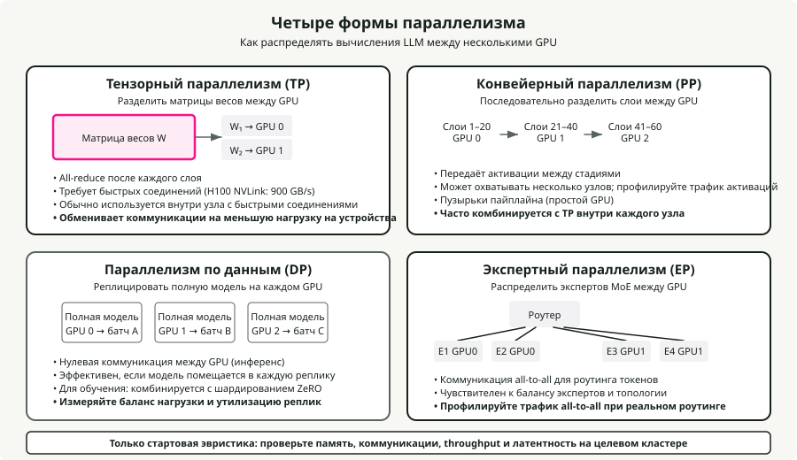
Tensor Parallelism (TP) делит отдельные матрицы весов между GPU и требует all-reduce после каждого слоя. Ему нужен bandwidth NVLink (900 GB/s на H100), и лучше всего он работает внутри одного узла. Типично TP=2 или TP=4; дальнейшее увеличение дает diminishing returns из-за communication overhead. Для inference TP снижает latency на запрос, деля compute.
Pipeline Parallelism (PP) делит слои последовательно между GPU, передавая activations между stage. Более низкие требования к bandwidth делают его применимым между узлами через InfiniBand, но появляются pipeline bubbles (простой GPU). Типичный паттерн: Llama-405B использует TP=8 внутри узлов и PP=2 между узлами.
Data Parallelism (DP) реплицирует полную модель на каждый GPU. Для inference это самая cost-effective стратегия масштабирования: каждая реплика обрабатывает независимые запросы без меж-GPU communication. Для training это главная ось масштабирования, комбинируемая с ZeRO для шардирования optimizer states.
Expert Parallelism (EP) распределяет MoE-experts между GPU, используя all-to-all communication для routing токенов. DeepSeek-V3 (671B total, 37B active, 256 experts) обычно разворачивается с EP=8 на узел. All-to-all communication дает ~47% latency forward pass даже на NVLink, что делает его главным bottleneck у MoE.
Framework выбора parallelism:
- Модель помещается на 1 GPU: использовать только DP.
- Модель помещается на 1 узел: использовать TP внутри узла + DP между узлами.
- Модель превышает 1 узел: использовать TP + PP + DP.
- Mixture of Experts: добавить EP к любой из схем выше.
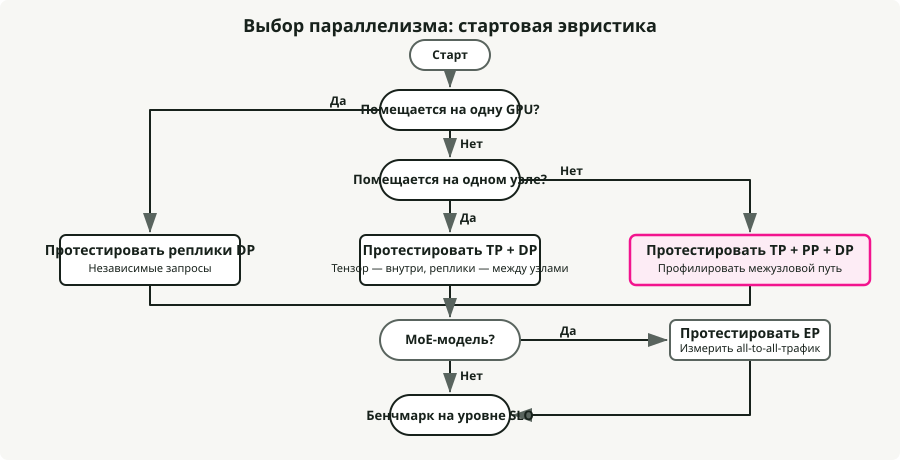
34. Сравнение serving frameworks
vLLM — наиболее широко используемый open-source framework, построенный на PagedAttention и continuous batching. У него самая широкая поддержка моделей, OpenAI-compatible API и поддержка TP/PP/DP/EP. Это проект PyTorch Foundation с крупнейшим сообществом.
SGLang во многих сценариях соответствует или превосходит vLLM (до 3.1x throughput на Llama-70B) за счет RadixAttention для prefix reuse, CPU-scheduler без overhead и нативной structured generation. Это был первый open-source framework, достигший официального inference-throughput DeepSeek в масштабе на 96 H100.
TensorRT-LLM показывает лучшую latency на одиночный запрос (35–50 ms TTFT) за счет CUDA graph fusion и kernel optimization, с нативной поддержкой FP8/FP4. Компромисс — более крутая кривая обучения, зависимость от Docker и lock-in на NVIDIA.
TGI (HuggingFace) хорошо интегрирован в экосистему HuggingFace и поддерживает несколько backend'ов (NVIDIA, AMD, Intel). По состоянию на начало 2025 года HuggingFace перевел TGI в режим maintenance.
Ollama — вариант для разработчиков, которым нужен локальный доступ к LLM в две команды. Не оптимизирован под production-throughput.
llama.cpp — портативный вариант на C/C++ с самой широкой поддержкой железа (ARM, AVX, Metal, CUDA, ROCm, Vulkan). Формат GGUF поддерживает quantization от 1.5-bit до 8-bit. Inference на CPU дает 3–45 tokens/s; на GPU (RTX 4090) — ~128 tokens/s на Llama 8B Q4_K_M.
35. Выбор GPU для inference
Цены и доступность GPU по состоянию на март 2026 года:
| GPU | Память | Bandwidth | Native Precision | TF32 TFLOPS | NVLink | Cloud $/hr |
|---|---|---|---|---|---|---|
| B200 | 192 GB HBM3e | 8 TB/s | FP4, FP8, INT8 | ~4,500 (FP8) | 5.0 (1.8 TB/s) | ~$6.25 |
| H200 | 141 GB HBM3e | 4.8 TB/s | FP8, INT8 | 989 | 4.0 (900 GB/s) | $2.15-6.00 |
| H100 SXM | 80 GB HBM3 | 3.35 TB/s | FP8, INT8 | 989 | 4.0 (900 GB/s) | $1.49-3.90 |
| A100 SXM | 80 GB HBM2e | 2.0 TB/s | INT8, FP16 | 312 | 3.0 (600 GB/s) | $1.10-2.54 |
| L40S | 48 GB GDDR6 | 864 GB/s | FP8, INT8 | 362 (FP16) | None | $0.80-1.50 |
| A10G | 24 GB GDDR6 | 600 GB/s | INT8, FP16 | 70 | None | $1.00-1.50 |
| RTX 4090 | 24 GB GDDR6X | 1.0 TB/s | FP8, INT8 | 83 (FP32) | None | ~$0.35/hr |
H200 — текущая sweet spot для больших моделей. Его 141 GB памяти позволяют уместить Llama 70B на одном GPU (раньше требовалось 2×H100), а bandwidth 4.8 TB/s дает до 2x более быстрый inference, чем у H100, на Llama 2 70B. B200 — следующий шаг поколения: нативная поддержка FP4, 192 GB HBM3e и NVLink 5.0 на 1.8 TB/s. A10G широко используется в облаке (например, AWS G5) для serving моделей на 7B–8B параметров благодаря соотношению цена/производительность. RTX 4090 остается королем consumer-сегмента при MSRP около ~$1,600.
Нативная поддержка hardware quantization сильно влияет на производительность. AWQ и GPTQ (с INT4-весами) могут эффективно работать на любой архитектуре, де-квантуя веса в FP16-registers, но настоящая нативная acceleration через Tensor Cores зависит от поколения. Hopper (H100/H200) и Ada (L40S/4090) нативно ускоряют FP8, а Blackwell (B200) добавляет нативные FP4 Tensor Cores для сильного роста throughput. Все перечисленные GPU поддерживают INT8 matrix operations.
Decode у LLM ограничен bandwidth памяти, поэтому для большинства serving workload bandwidth важнее, чем raw TFLOPS. Именно поэтому H200 превосходит H100, хотя вычислительная архитектура у них идентична.
36. Model Cascading и Routing
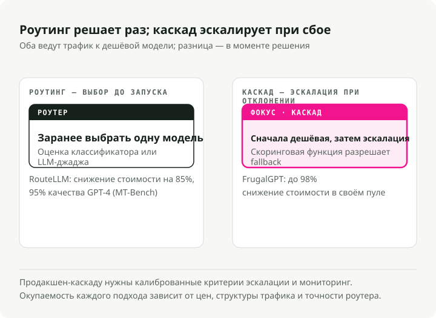
Model routing выбирает, какая LLM обрабатывает каждый запрос, на основе предсказанной сложности. RouteLLM (LMSYS/UC Berkeley, ICLR 2025) использует routers на matrix factorization, обученные на preference data из Chatbot Arena, чтобы добиться 85% снижения стоимости на MT-Bench при сохранении 95% качества GPT-4. Экономика по-прежнему работает: frontier-модель вроде GPT-4o стоит ~\\(5.00/M tokens (blended), тогда как быстрая open-модель вроде [Llama 3 8B](https://deepinfra.com/pricing/) — ~\\\)0.05/M, то есть разрыв примерно 100x, что делает routing выгодным даже при несовершенном качестве.
Архитектуры routers варьируются от легких BERT-классификаторов (~1–5 ms overhead) до LLM-based judges. Cascading — последовательный вариант: запрос проходит по цепочке моделей, начиная с самой быстрой и дешевой. Если scoring function решает, что generation недостаточно хороша, запрос эскалируется к следующей, более дорогой модели. FrugalGPT показал, что такой последовательный fallback может снизить inference-cost до 98%, сохранив качество лучшей отдельной LLM, или повысить accuracy до 4% при той же стоимости. Смысл в том, что дорогие frontier-модели используются только для сложного хвоста запросов, где они действительно нужны.
Часть VII — Приложения
Паттерны уровня приложений, которые превращают сырые возможности модели в полезные системы. Embeddings обеспечивают retrieval, RAG заземляет ответы во внешних знаниях, agents оркестрируют многошаговые workflows, а prompt engineering связывает все это вместе.
37. Embedding Models vs Generative Models
Embedding-модели кодируют текст в векторы фиксированной размерности, отражающие семантический смысл. В отличие от generative decoder-моделей, которые выдают последовательности токенов, они возвращают один плотный вектор (768–4,096 измерений) для всего входа. Большинство embedding-моделей используют encoder-only transformers (bidirectional attention), а не decoders. Encoder обрабатывает все входные токены сразу и выдает contextualized representation для каждого токена. Затем pooling layer сворачивает эти представления в один вектор — обычно через mean pooling (усреднение всех token embeddings) или CLS pooling (использование выхода специального classification token). Затем модель fine-tune'ится с contrastive learning: семантически близкие тексты сближаются в vector space, а далекие — раздвигаются.
Лучшие embedding-модели (2025-2026):
| Модель | Размерность | Архитектура | MTEB Score |
|---|---|---|---|
| Qwen3-Embedding-8B | up to 4,096 | Decoder-based (Qwen3) | 70.6% |
| Gemini Embedding 2 | 3,072 | Multimodal (text/image/video/audio) | 68.2% |
| pplx-embed-v1-4B | 2,560 | Decoder-based (Qwen3), native INT8/binary | 69.7% |
| Voyage-3-large | 2,048 | Proprietary | 66.8% |
| OpenAI text-embedding-3-large | 3,072 | Proprietary | 64.6% |
Несколько тенденций поколения 2025–2026. Лучшие модели теперь используют decoder-only backbone'ы (Qwen3, Mistral) с bidirectional attention и pooling layer сверху, что ломает старое предположение об encoder-only. Embedding-модель pplx-embed от Perplexity представила нативные quantized embeddings: INT8 (в 4 раза меньше storage) и binary (в 32 раза меньше), генерируемые прямо во время inference без post-hoc потерь от quantization. Gemini Embedding 2 от Google — первая нативно multimodal embedding-модель, отображающая текст, изображения, видео и аудио в единое vector space.
Matryoshka Representation Learning (MRL, Kusupati et al., NeurIPS 2022) — это техника, которая делает размерность embedding гибкой. Название отсылает к матрешкам: MRL структурирует embedding так, чтобы первые \(m\) измерений были столь же информативны, как отдельно обученная модель размерности \(m\). Во время обучения вместо одного loss на полном embedding MRL считает несколько loss параллельно на логарифмически распределенных размерностях (64, 128, 256, 512, 1024, 2048, 3072). Все loss агрегируются и backpropagate'ятся вместе, что заставляет модель упаковывать наиболее важную семантическую информацию в ведущие измерения, а каждая следующая группа измерений добавляет более тонкие детали. От грубого к детальному — как у матрешек.
После обучения embedding можно усекать до любой из этих обученных размерностей, просто беря префикс вектора. Практический эффект большой: OpenAI text-embedding-3-large, усеченная до всего 256 измерений, превосходит старую text-embedding-ada-002 на ее полной размерности 1,536 по MTEB. Шестикратное уменьшение размера вектора при лучшем качестве означает в 6 раз меньше storage, в 6 раз быстрее similarity search и в 6 раз ниже стоимость vector database — без переобучения модели.
Выбор embedding-модели — самое важное компонентное решение в RAG pipeline. Он определяет качество retrieval, а оно задает потолок качества generation. Плохую embedding-модель нельзя компенсировать лучшей LLM.
38. Архитектура RAG в production
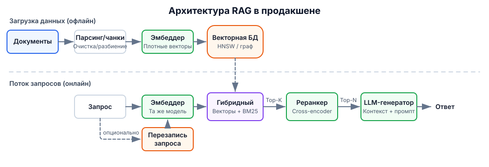
Retrieval-Augmented Generation заземляет ответы LLM во внешнем знании, извлекая релевантные документы во время запроса и подмешивая их в prompt context. Это решает главное ограничение purely parametric-моделей: их знания зафиксированы во времени обучения, и они hallucinate'ят, когда их спрашивают об информации, которой нет в их весах. Production RAG-система — это многостадийный pipeline, и каждая стадия влияет на финальное качество ответа.
Ingestion pipeline работает offline. Сырые документы (PDF, HTML, Markdown, базы данных) сначала парсятся в чистый текст, и это сложнее, чем кажется: один только PDF parsing может потерять таблицы, заголовки и форматирование. Затем текст разбивается на chunks, которые отдельно embedding'уются и индексируются.
Стратегия chunking сильно влияет на качество retrieval. Слишком маленькие чанки (меньше ~100 токенов) теряют контекст; слишком большие (больше ~512 токенов) размывают релевантность нерелевантным содержимым. Типичные подходы: fixed-size с overlap (256 токенов с overlap 10–15% — просто и эффективно), recursive character splitting (сначала по абзацам, потом по предложениям, потом по словам — уважает естественные границы) и semantic chunking (группирует предложения по embedding similarity — лучшее качество, но медленнее).
Затем каждый chunk embedding'уется моделью вроде тех, что перечислены в Разделе 37, и сохраняется в vector database (Pinecone, Weaviate, Qdrant, pgvector и т. д.).
Retrieval pipeline работает во время запроса. Наивный RAG (embedding запроса, один vector search, результаты в prompt) обычно не дает нужной accuracy в enterprise-сценариях. Production-grade RAG добавляет несколько стадий сверху, чтобы закрыть разрыв:
- Hybrid search объединяет dense vector retrieval (semantic similarity) и sparse retrieval вроде BM25 (точное совпадение ключевых слов), слияние идет через Reciprocal Rank Fusion (RRF). Dense search хорош для семантических парафразов ("cost of living" совпадает с "expenses"), а sparse search ловит точные термины, которые embeddings пропускают (product ID, error codes, acronyms). Hybrid search дает улучшение accuracy на 15–30% относительно чистого vector search (Redis/Azure Benchmarks, 2024).
- Reranking пропускает top-\(k\) извлеченных chunk'ов (обычно 20–50) через cross-encoder model, которая точнее оценивает query-document relevance, чем cosine similarity bi-encoder retrieval. Cross-encoder видит query и документ вместе, что дает более тонкое semantic matching. Reranking добавляет еще 23.4% улучшения относительно одного только hybrid search (Redis/Azure Benchmarks, 2024), ценой 50–200 ms дополнительной latency. Затем reranked top-\(n\) результатов (3–10) подмешиваются в prompt LLM. Полный multi-stage search pipeline (BM25, cross-encoder reranking, relevance от LLM) я разбирал в Building a Modern Search Ranking Stack.
- Query transformation переписывает пользовательский запрос перед retrieval, чтобы улучшить recall. HyDE (Hypothetical Document Embeddings) заставляет LLM сначала сгенерировать гипотетический ответ, который потом embedding'уется и используется для retrieval. Multi-query expansion генерирует несколько формулировок одного и того же вопроса. Step-back prompting сначала задает более общий вопрос, чтобы притянуть более широкий контекст.
Типичные failure modes:
- Retrieval failure — правильный документ существует, но не извлекается. Исправляется лучшим chunking, hybrid search или metadata filtering.
- Context poisoning — нерелевантные извлеченные чанки вводят LLM в заблуждение. Исправляется reranking и более строгими top-\(k\) cutoff.
- Lost-in-the-middle — LLM игнорирует релевантный контекст, помещенный в середину длинного prompt (Liu et al., 2024 показали, что модели сильнее всего attend к началу и концу context window).
GraphRAG (Microsoft, 2024) дополняет vector search обходом knowledge graph. Во время indexing LLM извлекает сущности и отношения из документов и строит граф, захватывающий multi-hop связи, невидимые для плоского vector search. Во время запроса GraphRAG проходит по этому графу для запросов, насыщенных отношениями, вроде "which suppliers are connected to both companies?", где стандартный RAG проваливается. Цена — намного более дорогой indexing compute и storage.
Типичный breakdown end-to-end latency: embedding 5–20 ms, vector search 10–100 ms, reranking 50–200 ms, генерация LLM 200–2,000 ms (Milvus RAG Optimization Guide, AIMultiple Reranker Benchmarks, 2026). Retrieval stages добавляют всего ~100–300 ms overhead относительно generation, но их влияние на качество ответа огромно: это разница между hallucinated answer и grounded answer.
39. Архитектуры agents и tool calling
LLM-agents используют модели как reasoning engine, который планирует, вызывает инструменты, наблюдает результаты и итеративно корректируется. Выбор архитектуры (как agent reasoning'ует и когда действует) определяет cost, latency и reliability. Три reasoning-паттерна покрывают большинство production-систем:
- ReAct — циклы Thought → Action → Observation. Адаптируется в реальном времени, потому что каждое observation обновляет reasoning, но история накапливается и должна повторно обрабатываться на каждом шаге, что делает этот паттерн самым дорогим.
- ReWOO — планирует все tool calls заранее за один проход LLM, используя placeholders (
#E1,#E2), затем выполняет их (потенциально параллельно) и синтезирует результат. До 5x экономии токенов относительно ReAct, но во время выполнения он «слеп»: не может восстановиться, если ранний tool call провалился. - Plan-and-Execute — planner генерирует многошаговый план; executor выполняет каждый шаг с возможностью перепланировать при ошибке. Позволяет специализацию моделей (сильная модель планирует, дешевая исполняет). Дает лучшие success rate на сложных задачах.
| Паттерн | Стоимость по токенам | Адаптивность | Лучше всего подходит для |
|---|---|---|---|
| ReAct | Высокая | Отличная — меняет курс в реальном времени | Исследовательских задач, debugging, chat |
| ReWOO | Низкая (~5x экономии) | Плохая — слеп во время исполнения | Предсказуемых pipeline, dashboards |
| Plan-and-Execute | Средняя | Хорошая — перепланирует при сбое | Сложного анализа, research-задач |
Function calling — механизм, через который agents вызывают инструменты. Нативный function calling (поддерживается GPT-4o, Claude, Gemini, Llama 3.1+) выдает структурированные JSON-вызовы инструментов, валидируемые по заданной схеме, с гораздо меньшим числом ошибок, чем при text-based parsing. Модель видит определения инструментов как часть своего контекста и учится выдавать корректно сформированные вызовы. Parallel function calling (несколько инструментов в одном ответе) снижает число round trips для независимых операций.
Structured output и constrained decoding гарантируют соответствие схеме, модифицируя сам процесс генерации токенов. Движки вроде xgrammar (используется в vLLM и SGLang) накладывают grammar masks на каждом шаге decoding и выдают 100% валидный JSON почти без overhead. Schema-Guided Reasoning (SGR) идет дальше: поскольку LLM генерируют поля последовательно, размещение analytical fields перед decision fields в схеме заставляет модель reasoning'овать до принятия решения. Три паттерна SGR покрывают большинство production-кейсов: Cascade (последовательные шаги), Routing (Union types как semantic switches) и Cycle (ограниченные списки).
Production-подводные камни: качество выбора tools деградирует после ~15–20 доступных инструментов, многошаговые agents занимают 5–30+ секунд, а сложные workflows стоят в 10–50x больше токенов, чем решения в один prompt. Тренд 2024–2025 — гибридные подходы: reasoning в стиле ReAct с нативным function calling, оркестрируемые фреймворками вроде LangGraph.
40. Prompt Engineering для production
Production prompt engineering — это меньше про хитрые трюки и больше про системную надежность. Техники ниже расположены по влиянию. Первые две уже решают большинство production-проблем.
Few-shot examples — самый надежный способ контролировать формат вывода. 3–5 разнообразных примеров, покрывающих edge cases (пустые входы, неоднозначные запросы, многочастные ответы), резко улучшают соблюдение формата и уменьшают необходимость в post-processing. Важна именно разнообразность: примеры должны покрывать распределение реальных входов, а не только happy path. После 5 примеров начинается diminishing returns, а каждый пример съедает токены контекста, поэтому качество важнее количества.
Chain-of-thought (CoT) prompting просит модель рассуждать пошагово перед ответом. Даже простой суффикс "Let's think step by step" заметно повышает accuracy на задачах по математике, логике и многошаговому reasoning (Kojima et al., 2022). Для production few-shot CoT (примеры, содержащие шаги рассуждения, а не только финальный ответ) надежнее zero-shot. Self-consistency (Wang et al., 2023) генерирует несколько CoT-траекторий (temperature 0.5–0.7) и берет majority vote, что снижает случайные ошибки ценой дополнительных inference-запросов.
Structured output с явными JSON-схемами (Раздел 39) убирает целый класс ошибок парсинга. В сочетании с constrained decoding engines вроде xgrammar вы получаете 100% валидный вывод почти без overhead. Никаких regex parsing, никаких retry-loop.
Prompt chaining разбивает сложные задачи на pipeline из фокусированных шагов: classify intent → retrieve context → generate response → validate output. Каждый шаг — простой, тестируемый prompt с одной целью. Это стабильно лучше, чем «mega-prompts», пытающиеся решить все за один вызов, потому что на каждом этапе можно использовать разную модель (дешевый classifier, дорогой generator), сбои локализованы и отлаживаемы, а промежуточные результаты можно кэшировать и переиспользовать. Цена — дополнительная latency из-за последовательных LLM-вызовов, поэтому chaining стоит применять там, где критично качество.
Temperature управляет случайностью в token sampling. Используйте 0.0–0.2 для детерминированных задач (classification, extraction, code generation), где важна согласованность. Используйте 0.7–1.0 для творческих задач (writing, brainstorming), где нужна вариативность. Избегайте temperature выше 1.0 в production; вывод становится incoherent. Temperature также нетривиально взаимодействует с top_p и top_k; в большинстве production-систем достаточно выставить temperature и оставить top_p равным 1.0.
Разделение system и user message важнее, чем думают многие команды. System messages задают постоянное поведение ("You are a medical coding assistant. Always cite ICD-10 codes."), а user messages несут контент конкретного запроса. Модели по-разному attend к system messages: они задают поведенческий фрейм, а не просто добавляют содержание к разговору. Помещайте жесткие ограничения ("NEVER include patient names in output") в system message, потому что модели стабильнее избегают конкретных паттернов, чем следуют общим позитивным инструкциям.
Большой сдвиг в 2024–2025 годах — переход от «prompt engineering» к context engineering: фокус сместился с изобретательных инструкций на динамическую сборку правильной информации (retrieved documents, результаты tools, история разговора, few-shot examples) в правильном формате и в правильной позиции context window. Модели сильнее всего attend к началу и концу контекста, поэтому размещение критичных инструкций и наиболее релевантного извлеченного контента именно там дает измеримое улучшение качества. Этот сдвиг я разбирал в Context Engineering for AI Agents.
Часть VIII — Production-эксплуатация
Операционные аспекты, которые определяют, переживет ли ваша система столкновение с реальным трафиком: rate limiting, failure modes, monitoring, cost optimization и capacity planning.
41. Rate Limiting для запросов с переменной стоимостью
Традиционный rate limiting по requests per second предполагает, что стоимость запроса примерно одинакова. LLM ломают это предположение. Prompt на 10 токенов для classification и запрос на 100K токенов для анализа документа бьют в один и тот же API endpoint, но отличаются по стоимости на четыре порядка. Ограничение по RPS либо пропускает дорогие запросы без контроля, либо зря душит дешевые.
Production-системам нужен token-based rate limiting сразу по нескольким измерениям. OpenAI применяет RPM (requests per minute) и TPM (tokens per minute) с лимитами по tier: GPT-5 Tier 1 начинается с 500K TPM и масштабируется до 4M TPM на Tier 4. Anthropic действует более гранулярно, с отдельными ITPM (input tokens per minute) и OTPM (output tokens per minute), что отражает тот факт, что генерация output-токенов стоит в 3–5 раз дороже, чем обработка input-токенов. Обе компании используют алгоритм token bucket, который непрерывно пополняет емкость, а не сбрасывает ее по фиксированным интервалам.
Практический шаблон реализации — многоуровневая иерархия лимитов (user → application → organization → global) с приоритетными tier для premium-доступа. На уровне запроса ключевая техника — резервирование token budget: оценить общее число токенов (input + max_tokens) в момент admission, списать их из bucket, а потом скорректировать после завершения запроса по фактическому потреблению. Это не дает burst'у long-generation-запросов исчерпать емкость еще до того, как они начнут выдавать output.
Для self-hosted deployment эквивалентом является provisioned throughput: резервирование выделенной GPU-емкости под гарантированные token rates. Anthropic и Amazon Bedrock предлагают это как продукт; для deployment на vLLM это означает настройку admission control по active decode slots и pressure на KV cache, а не по простому числу запросов. Суть возвращает нас к Разделу 5: throughput измеряется в токенах, а не в запросах, поэтому rate limiting должен тоже.
42. Failure Modes, против которых надо проектировать
LLM serving выходит из строя не так, как традиционные web-сервисы. Понимание этих failure modes (и проектирование защит до выхода в production) — то, что отделяет надежные системы от впечатляющих демо.
Out-of-Memory (OOM) — самый частый сбой. Модель 70B в FP16 требует ~140 GB только под веса, а KV cache для одной последовательности с context 128K добавляет еще ~40 GB (Раздел 6). Промежуток между «влезает в память» и «падает в OOM под нагрузкой» меньше, чем кажется: batch из 8 long-context запросов может потребовать больше памяти под KV cache, чем сами веса модели. Профилактика начинается с параметра gpu_memory_utilization в vLLM (дефолт 0.9; консервативные deployment используют 0.85–0.90) в сочетании с quantization и PagedAttention. Для workload с высоким pressure на KV cache LMCache переносит KV cache в память CPU или на диск и дает снижение latency в 3–10x за счет расширения эффективной cache capacity за пределы памяти GPU.
Preemption происходит, когда заканчивается место под KV cache и scheduler вынужден вытеснять активные запросы, чтобы освободить место для новых. В vLLM preempted-запросы пересчитываются с нуля, а не свопятся на CPU (для большинства практических длинах последовательностей recomputation быстрее). Со стороны пользователя это выглядит как тихий перезапуск его запроса «на лету»: TTFT выглядит нормально, но end-to-end latency удваивается или утраивается. За count preemption нужно внимательно следить. Рост preemption rate означает, что вам нужно больше памяти, более короткие последовательности или больше реплик.
Tail latency взлетает, когда большие prefill монополизируют GPU. Один prefill на 100K токенов может остановить decode-шаги для всех остальных запросов в batch. Chunked prefill (Раздел 7) — основная защита, с снижением P99 TBT на 54%. Важна и стратегия scheduling: Learning-to-Rank scheduler (NeurIPS 2024) предсказывает относительную длину вывода и приближает shortest-job-first ordering, давая снижение средней latency в 6.9x относительно FCFS при overhead <2%. Length-aware scheduling системы вроде CascadeInfer идут дальше, разделяя инстансы на группы, специализированные по длинам, и уменьшая tail TTFT на 56–62%.
Cascading failures идут по предсказуемой схеме. Медленный запрос (большой prefill или длинная generation) занимает decode slot, queue depth растет, upstream-клиенты ловят timeout, retries увеличивают нагрузку в 2–3 раза, и деградирует вся система. Иерархия защиты: admission control (отклонять запросы, когда queue depth выше порога) → limits на concurrency на запрос и caps max_tokens → circuit breakers на gateway → disaggregated pools prefill/decode (Раздел 7), чтобы запросы с тяжелым prefill не могли голодать decoders.
43. Monitoring LLM-систем
Monitoring LLM сильно отличается от monitoring традиционных API. У каждого запроса переменная стоимость, две отдельные фазы с разными bottleneck и footprint памяти, который зависит и от длины входа, и от длины generation. Стандартные метрики вроде request latency и error rate упускают большую часть важного.
Метрика, которую большинство команд не отслеживает, — goodput: число запросов в секунду, которые соответствуют всем SLO-порогам (TTFT, TPOT, total latency). Концепция пришла из измерения ML productivity в Google Cloud и стала лучшей единственной метрикой здоровья системы. Raw throughput может выглядеть отлично, пока goodput рушится: система, обрабатывающая 100 запросов/сек, но нарушающая SLO по TTFT для 40% запросов, имеет goodput 60, и 40% ваших пользователей получают плохой опыт. Оптимизация под goodput заставляет заботиться о распределении производительности, а не только о среднем.
vLLM предоставляет Prometheus endpoint по адресу /metrics с метриками, покрывающими весь lifecycle serving: vllm:num_requests_running и vllm:num_requests_waiting (pressure очереди), vllm:kv_cache_usage_perc (доля занятых блоков KV cache — выше 90% предсказывает скорый preemption), histograms длины generation и hit rate prefix cache. Практический setup прост: Prometheus опрашивает /metrics (каждые 1–5 секунд), Grafana визуализирует dashboards, а OpenTelemetry с Jaeger занимается distributed tracing по multi-service LLM-pipelines.
Какие алерты действительно важны и почему:
- Спайки count preemption — запросы вытесняются и перезапускаются; пользователь видит тихое удвоение latency.
- Утилизация KV cache >90% — вы в одном batch long-context-запросов от каскада preemption.
- Queue depth превышает 2–3x ваш batch size — admission control уже должен начинать отклонять или понижать приоритет.
- TTFT растет, а TPOT остается ровным — этот паттерн расхождения означает, что проблема в очередях или сети, а не в GPU compute. У prefill и decode независимые bottleneck (Раздел 4), поэтому если движется только одна метрика, вы сразу знаете, какую подсистему смотреть. Одна эта диагностическая эвристика экономит часы отладки.
44. Cost Optimization: стратегия с мультипликативным эффектом
Текущие цены API (по состоянию на март 2026) различаются на три порядка: GPT-4o — \(2.50/\)10.00 за миллион input/output-токенов, Gemini Flash-Lite — \(0.075/\)0.30. Траектория впечатляет. Производительность уровня GPT-4 сегодня стоит $0.40/M tokens против $20 в конце 2022 года, а стоимость снижается примерно в 10 раз в год. Даже на этой дефляционной кривой разница между наивным и оптимизированным deployment составляет 10–20x при любой фиксированной цене.
Обратите внимание на асимметрию в pricing любого провайдера: output-токены стоят в 3–10 раз дороже input-токенов. GPT-4o берет $10/M output против $2.50/M input (4x). Claude Sonnet 4 — $15/M output против $3/M input (5x). Причина в том, что output-токены требуют последовательных decode-step'ов (Раздел 7), в то время как input-токены обрабатываются параллельно. Поэтому оптимизация длины output (structured outputs, constrained generation, лаконичные system prompts) дает больший рычаг, чем оптимизация длины input.
Выигрышная стратегия сочетает несколько подходов, и их эффекты перемножаются:
- Quantization (FP16 → INT4) сокращает serving memory на 75%, что позволяет увеличить batch size и снизить операционные затраты на 60–70% (Раздел 9).
- Model routing отправляет 70% трафика на более дешевые модели. Один реальный кейс: месячный счет снизился с $42K до $29K (Maxim AI Case Study, 2024) за счет сопоставления сложности запроса возможностям модели (Раздел 36).
- Prompt caching дает до 90% экономии на workload с общими prefix. Anthropic берет 0.1x базовой цены за cache reads, а cached tokens даже не учитываются в лимитах ITPM (Раздел 16).
- Batch APIs дают скидки 50% для non-real-time workloads (evaluation, synthetic data generation, bulk classification).
- Self-hosting выходит в ноль примерно при >2M tokens/day, но анализ точки безубыточности здесь коварен. Бюджет на GPU в $5K/месяц легко превращается в $25K, если добавить engineering time, infrastructure overhead, on-call burden и недоиспользование по сравнению с провайдерами, которые амортизируют затраты на тысячах клиентов.
Если аккуратно перемножить: quantization (0.3x) × routing (0.7x) × caching (0.5x) × batching (0.5x) = ~0.05x, то есть 95% reduction относительно наивного baseline. Не каждый workload подходит под каждую оптимизацию, но даже частичное комбинирование дает 5–10x экономию.
Скрытая стоимость, которая ломает математику self-hosting: ML engineering составляет 70–80% общей стоимости deployment, а не compute (TrueFoundry / MLOps Reports, 2024). Счет за GPU — только видимая часть айсберга.
45. Capacity Planning и Autoscaling
Capacity planning для LLM serving отличается от традиционных web-сервисов по трем причинам. Стоимость запросов различается на порядки (запрос на 100 токенов и на 100K токенов идут в один endpoint). Decode — это долгий последовательный процесс, а не быстрый request-response cycle. И главное ограничение — память, а не compute. Ошибка в любом из этих пунктов означает либо оплату простаивающих GPU, либо потерю запросов под нагрузкой.
Жесткий потолок конкурентных запросов задается budget памяти под KV cache, а не FLOPS:
Для модели Llama 3 70B в INT4 (~35 GB) на H100 80 GB примерно 40 GB остается под KV cache. С GQA и средним context 4K каждая последовательность требует ~160 MB KV cache, что дает ~250 конкурентных последовательностей. При context 128K это падает до ~5 последовательностей на GPU. Именно поэтому выбор GPU и оптимизация KV cache напрямую определяют ваш capacity plan.
Формула capacity для размера флота:
Важная деталь — «at target SLO». Один H100 может выдавать 2,000+ tokens/second, если вас не волнует latency, но только 400–800 tokens/second при сохранении P99 TTFT ниже 500 ms. Всегда проводите бенчмарки на своих реальных SLO, а не на теоретических максимумах.
Сигналы для autoscaling тоже нужно переосмыслить. Утилизация GPU почти бесполезна как scaling signal, потому что остается высокой даже при перегрузке: GPU всегда чем-то занят — либо здоровой обработкой запросов, либо thrashing на preemption. Лучшие сигналы — queue depth (напрямую измеряет превышение спроса над capacity), утилизация KV cache (предсказывает preemption до того, как он произойдет — scale up при 80%, а не 95%), и деградация goodput (нарушения SLO — это ground truth того, что capacity недостаточна). Это те же метрики из Раздела 43.
Для development и staging scale-to-zero — правильная экономика. GPU-инстансы стоят $2–4/hour; staging-среда, работающая 24/7, обходится в $1,500–3,000/месяц за один GPU. Serverless inference-платформы и Kubernetes-based autoscaler'ы (например, KEDA с custom metrics) могут останавливать инстансы до нуля в idle-периоды и cold-start'ить их за 30–60 секунд, что приемлемо для non-production use. Компромисс — время загрузки модели (30–60 секунд для 70B-модели), что делает scale-to-zero непрактичным для production latency targets, но сокращает non-production GPU-spend на 80–90%.
Взаимосвязанная система
Эти 45 концепций — не разрозненный набор. Это связанная система. Размер KV cache определяет batch size, batch size определяет arithmetic intensity, arithmetic intensity определяет, является ли decode memory-bound, а это уже управляет TPOT, который определяет throughput. GQA уменьшает KV cache, что позволяет использовать более крупные batch size, что повышает arithmetic intensity и улучшает utilization GPU. FlashAttention использует разрыв bandwidth между SRAM и HBM. Continuous batching решает проблему utilization compute, но создает fragmentation памяти, которую и устраняет PagedAttention. Chunked prefill совместно планирует compute-bound и memory-bound работу; roofline model объясняет, почему эта комплементарность работает.
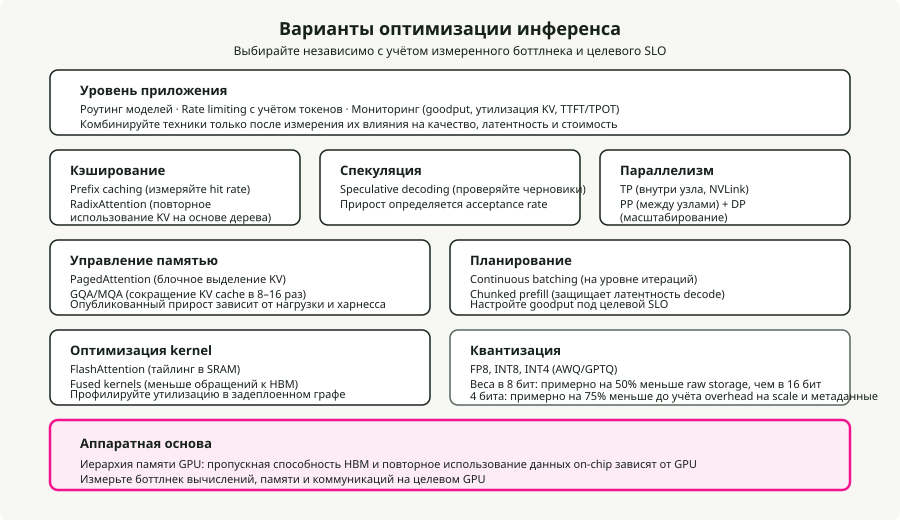
Со стороны обучения ловушка Chinchilla сместила поле от «обучать большие модели» к «обучать меньшие модели дольше» (Llama 3 8B при 1,875 токенов на параметр). GRPO убрал memory burden PPO с четырьмя моделями, и именно это сделало feasible reasoning DeepSeek-R1. Distillation из chain-of-thought R1 оказалась эффективнее прямого применения RL к smaller models, и это изменило способ построения компактных reasoning-систем.
Метапаттерн такой: стоимость inference падает примерно в 10 раз в год, пока возможности растут. Команды, которые относятся к оптимизации inference как к реальной инженерной дисциплине (routing, caching, quantization, правильно подобранное железо), получают накапливающиеся преимущества на рынке, где нижняя граница стоимости постоянно снижается.
Ключевые принципы
- У LLM inference две разные фазы. Prefill — compute-bound, decode — memory-bandwidth-bound. Любая оптимизация бьет в одну или обе.
- KV cache — центральный bottleneck. Его размер определяет batch capacity, pressure на память и в конечном счете throughput. GQA, PagedAttention и quantization атакуют именно его.
- Иерархия памяти GPU определяет все. Разрыв в 10x по bandwidth между SRAM и HBM объясняет FlashAttention, kernel fusion и то, почему decode memory-bound.
- Continuous batching + PagedAttention вместе дают 23x throughput относительно наивного serving. Для production это обязательно.
- Chinchilla-optimal не равно inference-optimal. Поле перешло к массовому overtraining smaller models (1,875 токенов на параметр для Llama 3 8B).
- GRPO и distillation изменили alignment. DeepSeek-R1 показала, что GRPO + verifiable rewards + distillation лучше, чем прямое применение RL к smaller models.
- Оптимизация стоимости имеет мультипликативный эффект. Комбинация quantization, routing, caching и batch API дает снижение стоимости в 5–10x относительно наивного deployment.
- Для serving bandwidth важнее, чем TFLOPS. H200 превосходит H100 при идентичном compute только за счет bandwidth памяти.
Дополнительное чтение
Связанные deep-dive-материалы из этого блога, сгруппированные по темам:
- LLM Fine-Tuning Guide — когда делать fine-tuning vs. RAG vs. prompt engineering
- Open-Source LLM Variants and File Formats — как сопоставлять варианты моделей и quantized formats с железом
- LoRAX Serving Guide — serving тысяч LoRA-adapters в production
- Scaling Large Language Models — multi-GPU и multi-node стратегии
- Local LLMs on macOS — практический setup с llama.cpp и Ollama
- AI Agent Reasoning Loops in 2026 — подробный разбор ReAct, ReWOO и Plan-and-Execute
- AI Agent Memory Architecture in 2026 — checkpoints, vector stores и document memory для stateful agents
References
Сгруппированы по тематике; номера разделов указаны в квадратных скобках.
Inference и Attention
- FlashAttention: Fast and Memory-Efficient Exact Attention with IO-Awareness - Dao et al., NeurIPS 2022
- FlashAttention-2: Faster Attention with Better Parallelism and Work Partitioning - Dao, 2023
- FlashAttention-3: Fast and Accurate Attention with Asynchrony and Low-precision - Shah et al., NeurIPS 2024
- Flash-Decoding for long-context inference - Dao et al., 2023
- Efficient Memory Management for Large Language Model Serving with PagedAttention - Kwon et al., SOSP 2023
- Orca: A Distributed Serving System for Transformer-Based Generative Models - Yu et al., OSDI 2022
- GQA: Training Generalized Multi-Query Attention - Ainslie et al., 2023
- Triton: an intermediate language and compiler for neural network computations - Tillet et al., MAPL 2019
- FlashNorm: Fast Normalization for LLMs - 2024
- Deep Kernel Fusion for Transformers - DeepFusionKernel, 2026
Speculative Decoding
- EAGLE-3: Scaling up Inference Acceleration of Large Language Models - Li et al., NeurIPS 2025
- Medusa: Simple LLM Inference Acceleration Framework with Multiple Decoding Heads - ICML 2024
Quantization
- AWQ: Activation-aware Weight Quantization for LLM Compression and Acceleration - MLSys 2024 Best Paper
- GPTQ: Accurate Post-Training Quantization for Generative Pre-trained Transformers - Frantar et al., ICLR 2023
- Marlin: Mixed-Precision (FP16xINT4) LLM Inference Kernel - Frantar et al., 2024
Training и Fine-Tuning
- LoRA: Low-Rank Adaptation of Large Language Models - Hu et al., ICLR 2022
- QLoRA: Efficient Finetuning of Quantized LLMs - Dettmers et al., NeurIPS 2023
- ZeRO: Memory Optimizations Toward Training Trillion Parameter Models - Rajbhandari et al., SC20
- ZeRO-Infinity: Breaking the GPU Memory Wall for Extreme Scale Deep Learning - Rajbhandari et al., 2021
- Self-Instruct: Aligning Language Models with Self-Generated Instructions - Wang et al., ACL 2023
- WizardLM: Empowering Large Language Models to Follow Complex Instructions - Xu et al., ICLR 2024
- Phi-4 Technical Report - Microsoft, 2024
- AI models collapse when trained on recursively generated data - Shumailov et al., Nature 2024
Alignment
- Direct Preference Optimization: Your Language Model is Secretly a Reward Model - Rafailov et al., NeurIPS 2023
- DeepSeekMath: Pushing the Limits of Mathematical Reasoning in Open Language Models - Introduced GRPO
- DeepSeek-R1: Incentivizing Reasoning Capability in LLMs via Reinforcement Learning - DeepSeek, 2025
Scaling и Architecture
- The Llama 3 Herd of Models - Meta, 2024
- LLaMA: Open and Efficient Foundation Language Models - Touvron et al. (Meta), 2023
- Llama 2: Open Foundation and Fine-Tuned Chat Models - Touvron et al. (Meta), 2023
- Qwen3 Technical Report - Qwen Team (Alibaba), 2025
- Training Compute-Optimal Large Language Models - Hoffmann et al. (Chinchilla), NeurIPS 2022
- RoFormer: Enhanced Transformer with Rotary Position Embedding - Su et al., 2021
- YaRN: Efficient Context Window Extension of Large Language Models - Peng et al., ICLR 2024
- SGLang: Efficient Execution of Structured Language Model Programs - Zheng et al., NeurIPS 2024
- Mixtral of Experts - Jiang et al. (Mistral AI), 2024
Embeddings
- Matryoshka Representation Learning - Kusupati et al., NeurIPS 2022
- pplx-embed-v1: Diffusion-Pretrained Dense and Contextual Embeddings - Perplexity AI, 2026
Agent Architectures
- ReAct: Synergizing Reasoning and Acting in Language Models - Yao et al., ICLR 2023
- ReWOO: Decoupling Reasoning from Observations for Efficient Augmented Language Models - Xu et al., 2023
- Plan-and-Solve Prompting: Improving Zero-Shot Chain-of-Thought Reasoning by Large Language Models - Wang et al., ACL 2023
Routing
- RouteLLM: Learning to Route LLMs with Preference Data - Ong et al., ICLR 2025
Benchmarks
- MLPerf Inference v5.0 Results - MLCommons, April 2025
Serving Architectures
- SARATHI: Efficient LLM Inference by Piggybacking Decodes with Chunked Prefills - Agrawal et al., 2023 (Chunked Prefill)
- Splitwise: Efficient Generative LLM Inference Using Phase Splitting - Patel et al., ISCA 2024 (Disaggregated Serving)
- DistServe: Disaggregating Prefill and Decoding for Goodput-optimized Large Language Model Serving - Zhong et al., OSDI 2024 (Disaggregated Serving)
Serving Frameworks
- vLLM - serving engine на базе PagedAttention
- SGLang - RadixAttention и structured generation
- TensorRT-LLM - inference, оптимизированный под NVIDIA
- llama.cpp - переносимый C/C++ inference
- DeepSpeed - библиотека распределенного обучения от Microsoft
- Ollama - локальный runner для LLM
Operations
- Efficient LLM Scheduling by Learning to Rank - Fu et al., NeurIPS 2024 (vLLM-LTR)
- CascadeInfer: Low-Latency and Load-Balanced LLM Serving via Length-Aware Scheduling - 2024
- Goodput metric as measure of ML productivity - Google Cloud, 2024
- vLLM Optimization and Tuning - документация vLLM
- vLLM Metrics - документация vLLM
- LMCache: KV Cache Management for LLM Serving - offloading KV cache
- OpenAI Rate Limits - документация OpenAI API
- Anthropic Rate Limits - документация Anthropic API